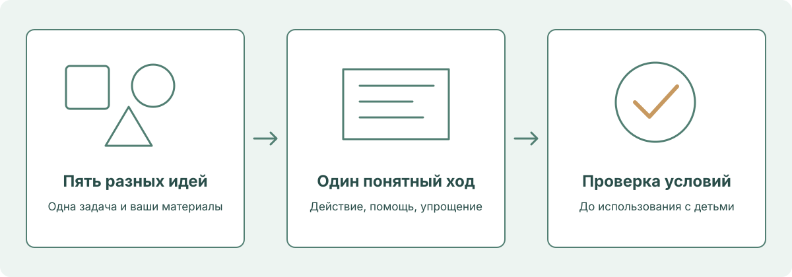

Практикум для воспитателей21 октября 20260–90 минутДети 2–3 и 3–4 лет
ИИ-помощник воспитателя. От идеи — к своей практике.
Рабочая тетрадь на одну встречу: попробуйте запрос, проверьте черновик и сохраните свою доработку. Рядом — вопросы для обсуждения, подсказки ведущему и запасные примеры.
ИИ помогает готовиться. С детьми — живое общение, предметы, движение и творчество. Без экранных заданий и без персональных данных.
СНАЧАЛА РАЗБЕРЁМСЯ · ПОТОМ ПОПРОБУЕМ
Нейросети — понятнымязыком.
12 визуальных опор для первого знакомства. Листайте как презентацию или откройте всё для чтения.
12 слайдов
Внутри существующих 90 минут: слайды 1–7 и 12 заменяют 17 минут вводных объяснений; 8–11 входят в 9 минут конструктора. Это визуальная поддержка маршрута, а не дополнительное время. Рекомендуемый порядок: 1–7 → 12 → 8–11.
1 / 12
01 / НАЧИНАЕМ С ВАШЕЙ ЗАДАЧИ
Меньше чистого листа. Больше времени на детей.
ИИ помогает подготовить материал. Педагог решает, подходит ли он конкретной группе.
ИсторияОдин понятный эпизод
ИграДействие и помощь взрослого
Рабочий текстБытовой переход или сообщение
Ваш результат: три проверенных черновика, а не три «готовых ответа без правок».
02 / ТРИ СЛОВА БЕЗ ПУТАНИЦЫ
ИИ — широкое понятие. LLM работает с языком.
Модель и приложение — разные вещи. Сервис даёт удобный доступ к модели и дополнительным инструментам.
ИСКУССТВЕННЫЙ ИНТЕЛЛЕКТ
Модели для языка
LLMБольшая языковая модель
Другие задачи: изображения, звук, прогнозирование
→
Чат-сервис
Окно переписки + доступные модели + инструменты
Состав зависит от сервиса.
По-простому: LLM — модель; чат — место, где вы с ней работаете.
03 / ДВА РАЗНЫХ ПРОЦЕССА
Сначала модель обучают. Потом вы задаёте вопрос.
При обучении модель настраивает параметры по данным. В чате она использует обученные закономерности и доступный контекст.
ДО ВАШЕЙ РАБОТЫ
Примеры данных
→→
Обученная модель
ВО ВРЕМЯ ВАШЕЙ РАБОТЫ
Ваш запрос+Контекст беседы→Новый ответ
Важно: уточнение в чате меняет контекст, но не означает мгновенного переобучения модели. Правила хранения данных проверяйте у сервиса.
04 / ОТ ЗАПРОСА К ЧЕРНОВИКУ
Ответ собирается по частям. Смысл проверяете вы.
Модель последовательно формирует текст с учётом запроса и контекста. Это не гарантированная выдача «правильного ответа из справочника».
ВХОДЗадача + условия
«Игра для 2–3 лет, крупные кубики»
→
ГЕНЕРАЦИЯТекст по частям
Возьмитекрупныйкубик…
Упрощённая иллюстрация: токен не обязательно целое слово.
→
ВЫХОДЧерновик
Идея, реплики, последовательность
└ Поиск в интернете — отдельный инструмент, если он доступен и используется.
↻ Уточнить запросПедагог проверяет✓ Адаптировать и использовать
Рабочий цикл: запрос → черновик → ваша проверка → уточнение.
05 / ПОЛЕЗНО ≠ БЕЗОШИБОЧНО
Хорошо пишет. Но может уверенно ошибаться.
«Галлюцинация» — выдуманные или искажённые сведения, которые модель подаёт как достоверные: факт, ссылка, цитата или правило.
＋
Поручаем черновую работу
Предложить разные идеи
Упростить и перестроить текст
Составить варианты реплик
Оформить заданные сведения
!
Не принимаем на веру
Факты, цитаты и ссылки
Возрастную доступность
Безопасность реальной игры
Заявление «соответствует ФГОС»
Уверенный тон≠Доказательство
Привычка педагога: проверять особенно внимательно то, что звучит как факт или обязательное требование.
06 / ГДЕ ЧТО НАХОДИТСЯ
У разных сервисов — похожая логика общения.
Это учебная схема, не скриншот конкретного сервиса. Расположение, названия кнопок и доступные функции различаются.
Предложи игру с крупным мячом для детей 2–3 лет.
НАЖМИТЕ НА ОБЛАСТЬ СХЕМЫ
4 · Поле ввода запроса
Сюда вводят задачу и условия. Перед отправкой проверьте текст и уберите персональные данные.
Схема ничего не отправляет. Все элементы — учебные пояснения.
Учебная схема. Названия, расположение кнопок и функции зависят от сервиса, устройства и тарифа.
Сначала найдите: новый чат, поле ввода, кнопку отправки и область ответа.
07 / ПЯТЬ ПОНЯТНЫХ ДЕЙСТВИЙ
Управляйте беседой. Не начинайте всё заново.
Сначала проверьте кнопки в выбранном сервисе. На телефоне и компьютере они могут выглядеть по-разному.
⌨Ввести
Написать задачу в поле запроса
→
↑Отправить
Запустить создание ответа
→
■Остановить
Прервать генерацию, если кнопка есть
→
↻Повторить
Получить другой вариант, если функция доступна
→
＋Новый чат
Начать отдельную задачу
Зависит от сервиса и условий:поиск в интернетефайлыголосизображениявыбор модели
Повтор не гарантирует точности. Новый чат не равен удалению данных; память и хранение зависят от условий и настроек сервиса.
08 / СТРУКТУРА ПРОМПТА
Промпт — это ваше понятное задание модели.
Не нужны «волшебные слова». Нужны цель, условия и понятный вид результата. Роль помогает задать перспективу, но не гарантирует качество.
Роль — по желанию: «Помоги воспитателю…» задаёт перспективу, но не заменяет условия.
1
ЗадачаЧто именно подготовить?
2
Возраст и контекстДля кого и в какой ситуации?
3
Материалы и ограниченияЧто есть? Чего избегать?
4
Формат ответаШаги, реплики, упрощение
Если нужна опора на программу: дайте короткий проверенный фрагмент с реквизитами. В конце попросите список того, что проверить педагогу.
Четыре опоры: задача + контекст + условия + формат. Не длина запроса, а ясность условий.
09 / РАЗБИРАЕМ НА ПРИМЕРЕ
Каждый цвет — своя часть задания.
Одна игра, один возраст, реальные предметы. Цвет дополнен подписями: смысл понятен и без различения оттенков.
ЗАДАЧА
Предложи спокойную предметную игру с крупным мягким мячом.
КОНТЕКСТ
Для небольшой группы детей 3–4 лет в групповой комнате. Игру проводит воспитатель.
УСЛОВИЯ
Только один крупный мягкий мяч. Без соревнования, мелких деталей и экрана. Ребёнок может участвовать действием или наблюдать; обязательного речевого ответа нет.
ФОРМАТ
Дай название, материалы, три коротких шага, реплики взрослого и упрощённый вариант. В конце укажи, что проверить педагогу перед проведением.
В режиме слайдов: ← / →, Home / End. Полный экран закрывается Esc. На телефоне можно выбрать «Все слайды».
01 / ПЕРЕД НАЧАЛОМ
Три заготовки, которые останутся с вами
01
Короткая история
Один ясный сюжет, предметный показ и две реплики для включения ребёнка.
02
Предметная игра
Понятное действие, реальные материалы и вариант упрощения.
03
Рабочий материал
Бытовой переход, сообщение взрослым или фрагмент планирования на выбор.
Ещё вместе соберём каркас праздника и творчески доработаем одну заготовку. Все 20 запросов за встречу выполнять не нужно.
Как подготовиться и что нельзя передавать ИИ
Участнику понадобятся устройство для встречи и текстового сервиса, обезличенная задача и, по возможности, небольшой проверенный фрагмент своей программы или локального плана. Удобно открыть две вкладки: встреча и Алиса AI. Вход проверяют заранее; при сбое используют GigaChat либо сохранённый ответ ведущего.
Для работы с программой достаточно самостоятельно выбранного небольшого фрагмента: цель или задача для нужного возраста, соответствующий раздел и реквизиты источника. Не нужно загружать всю программу организации, персональные приложения, таблицы наблюдений, списки детей или документы с ограниченным доступом. Использовать можно только материал, который педагог вправе передавать выбранному сервису.
Не вводить имена, фотографии, голоса, даты рождения, диагнозы, характеристики и индивидуальные записи о детях и семьях. Условия описывать обобщённо: возраст, количество участников, помещение, доступные материалы.
Ведущий заранее проверяет вход и один короткий запрос в основном сервисе и резерве; готовит сохранённые ответы для трёх практик, пример с ошибками и короткий разрешённый к использованию источник. Проверку действующих документов и местных условий проводит по первоисточникам, а не через ответ модели.
Техническое подключение за 10 минут до начала возможно, но обязательное обучение полностью укладывается в 90 минут.
02 / МАРШРУТ НА 90 МИНУТ
Работаем шаг за шагом.
У каждого шага — время, действия и результат. Порядок работы сохранён на 90 минут. Вопросы и поля тетради используйте внутри отведённого времени, а не как дополнительный блок.
1 / 12
0 из 12 шаговОтмечайте свой ход работы. Отметки не заменяют проверку материала.
Какую небольшую подготовительную задачу вы хотите упростить сегодня?
1 минута: показать три личных результата и общий праздник.
1 минута: обозначить возраст 2–3 и 3–4 года, правило обезличивания и работу ИИ только для взрослых.
2 минуты: ведущий отправляет «Предложи три названия спокойной игры с крупным мячом для детей 2–3 лет. Только названия»; участники пробуют или смотрят сохранённый ответ.
1 минута: проверить, что у каждого есть маршрут участия: сервис, резерв или сохранённый пример.
Реплика ведущего: «Сегодня учимся поручать ИИ небольшую подготовительную работу. Решение, что подходит детям и вашей программе, остаётся у вас».
Подсказка ведущему · открыть после обсуждения
Выберите одну реальную задачу без данных детей. Результат ИИ сначала считается черновиком.
Если группа молчит: попросите выбрать между двумя вариантами — «оставляем как есть» или «нужна правка» — и назвать одну причину.
00:05–00:116 минПрограмма, пять областей и границы ИИ+
Обсудим перед шагом
Какая область здесь основная и что именно делает ребёнок?
2 минуты: показать пять областей и один общий сюжет «Игрушка возвращается домой». Попросить назвать главное действие ребёнка и связанную с ним область.
2 минуты: развести уровни: ФГОС ДО задаёт рамку; ФОП ДО раскрывает содержание; программа организации и рабочие материалы педагога конкретизируют работу. При анализе документа сначала установить, что именно открыто и для какого возраста.
2 минуты: продемонстрировать принцип «педагог даёт проверенный фрагмент — модель предлагает вариант — педагог сверяет». Сравнить фразы «Сделай строго по ФГОС» и «Предложи эпизод по этому проверенному фрагменту, не добавляя вымышленных требований».
Реплика: «Уверенная ссылка в ответе модели ещё не доказательство. Нам нужен реальный фрагмент документа с понятным источником».
Проверенные нормативные реквизиты и ссылки размещены в справке в конце материала. Коротко назвать ограничения для выбранных возрастов и работу без детских экранов; подробный разбор таблиц оставить в справке. На встрече не читать длинные выдержки и не разбирать юридические тонкости вместо практики.
Подсказка ведущему · открыть после обсуждения
Не ищите пять областей в каждой игре. Просите назвать одно наблюдаемое действие и сверяйте его с выбранной задачей.
Если группа молчит: попросите выбрать между двумя вариантами — «оставляем как есть» или «нужна правка» — и назвать одну причину.
2 минуты: показать, как в недостаточно конкретном запросе появляются лишние правила и неподходящий возраст.
2 минуты: участники называют условия, которые забыли сообщить модели.
Объяснение: «Модель строит ответ, опираясь на закономерности, усвоенные при обучении, и доступный ей контекст. Она умеет предлагать и перерабатывать текст, но может выдумать факт, источник или убедительное объяснение. Даже повторная проверка той же моделью не заменяет проверку взрослого».
Не обещать, что модель всегда ищет в интернете, знает действующие нормы или понимает конкретного ребёнка.
Подсказка ведущему · открыть после обсуждения
Нет. Модель может дать правдоподобный, но неподходящий ответ. Проверка опирается на источник и реальные условия.
Если группа молчит: попросите выбрать между двумя вариантами — «оставляем как есть» или «нужна правка» — и назвать одну причину.
00:17–00:236 минШесть сервисов: где работать сегодня+
Где вы уже можете отправить один короткий учебный запрос?
По одной минуте на сервис. Показать официальный адрес и одну практическую мысль, не открывать шесть процессов регистрации.
Алиса AI: основная площадка для короткого русскоязычного черновика. https://alice.yandex.ru
GigaChat: резерв; условия входа нужно проверить заранее. https://giga.chat
DeepSeek: дополнительный текстовый инструмент; доступность и лимиты проверяют на своём устройстве. https://chat.deepseek.com
Qwen: дополнительный вариант, не обязательная площадка. https://qwen.ai/qwenchat
Kimi: обзорно, без обещания одинаковой доступности у всех. https://www.kimi.com
ChatGPT: известный пример; обязательную практику для участников из России на нём не строим из-за ограничений официальной региональной поддержки. https://chatgpt.com
Публичная проверка условий проведена 17 октября 2026 года; реальный вход из российских сетей не тестировался. Условия могут меняться, поэтому перед встречей необходим повторный тест основного сервиса и резерва. Обзор не является рейтингом качества и не обещает «бесплатно без ограничений».
Подсказка ведущему · открыть после обсуждения
Выберите один сервис. При сбое переходите к резерву или сохранённому примеру; не тратьте практику на шесть регистраций.
Если группа молчит: попросите выбрать между двумя вариантами — «оставляем как есть» или «нужна правка» — и назвать одну причину.
Каких условий не хватает в запросе «Придумай игру по ФГОС»?
2 минуты: шесть опор запроса: результат; возраст и действие ребёнка; область и задача; условия; проверенный источник при необходимости; формат и проверка.
2 минуты: ведущий превращает «Придумай игру по ФГОС» в конкретный запрос для 2–3 лет.
3 минуты: участники собирают свой запрос, выбирая только одну возрастную группу.
2 минуты: проверяют, не осталось ли школьных требований, лишнего реквизита или неподтверждённых норм.
Рабочий образец: «Предложи предметную игру для детей 2–3 лет: вместе со взрослым находить такой же крупный кубик по одному признаку. Основная область — познавательное развитие. Есть по два одинаковых крупных кубика, одобренных для этого возраста. Работаем небольшой подгруппой. Дай одно действие за раз, короткие реплики взрослого и вариант участия через показ. Без счёта, чтения, соревнования и мелких деталей. Укажи, что педагог должен проверить в своей программе и условиях группы. Не объявляй нормативное соответствие».
Подсказка ведущему · открыть после обсуждения
Нужны возраст, конкретное действие, задача, реальные материалы и формат. Название стандарта не доказывает соответствия.
Если группа молчит: попросите выбрать между двумя вариантами — «оставляем как есть» или «нужна правка» — и назвать одну причину.
00:32–00:4311 минПрактика 1. Очень короткая история+
Обсудим перед шагом
Можно ли показать главное действие истории знакомым предметом?
2 минуты: выбрать возраст и промпт № 1 или № 2.
3 минуты: получить первый текст.
2 минуты: прочитать вслух как взрослый и проверить: виден ли сюжет, понятны ли слова, можно ли показать действие?
2 минуты: два участника показывают одну правку «было → стало».
Результат: история, две простые реплики для вовлечения и предметный показ. Не требовать от детей пересказа или объяснения морали. Если ответ задерживается, участники редактируют готовый пример и пишут уточнение к нему.
Выберите подходящий возраст или маршрут. Замените поля в квадратных скобках до отправки.
Промпт № 1 · открыть полный текст
Напиши оригинальную историю для чтения взрослым детям 2–3 лет. Один эпизод: игрушечный зайка вместе со взрослым кладёт мяч в корзину. Объём 30–60 слов — это условие моего черновика, а не возрастная норма. Не больше двух действующих персонажей, короткие предложения, знакомые слова и одна повторяющаяся фраза. Без страха, наказания, сложных причин и морали в конце. После истории дай две короткие реплики взрослого, на которые можно ответить показом, действием или словом, и покажи, как разыграть эпизод с крупными безопасными игрушками. Основная область — речевое развитие, связь — совместное действие. Не требуй пересказа. В конце укажи, какие слова, предметы и действия педагог должен проверить для своей группы.
Промпт № 2 · открыть полный текст
Напиши оригинальную историю для чтения взрослым детям 3–4 лет: кукла и мишка готовят место для игрушечного гостя. Объём 60–90 слов как редакторское условие, не обязательная норма. Один ясный сюжет, не больше трёх персонажей, короткая повторяющаяся реплика, спокойная развязка. Не объясняй детям абстрактную мораль. Добавь два простых вопроса с опорой на крупные игрушки; на каждый можно ответить словом, короткой фразой или показом. Предложи одно совместное действие после чтения. Основная область — речевое развитие. Не требуй чтения, пересказа и обязательного ответа каждого. В конце перечисли, что взрослый должен адаптировать к опыту группы.
Если сервис не отвечает
Работайте с сохранённым примером: найдите одну проблему и сформулируйте уточнение. Результат этой практики можно получить без повторных попыток входа.
«Зайка взял мяч. Мяч покатился к корзине. “Мячик, домой!” — сказал зайка. Взрослый подвинул корзину ближе. Зайка поднял мяч и положил в корзину. “Вот он, мячик!” Зайка посмотрел на взрослого. Они вместе помахали мячику».
Попробуйте уточнение: убрать переносное слово «домой» и оставить одно понятное действие с репликой «Мяч в корзину». Предметы и участие проверяет взрослый.
Авторский пример для анализа. Проверьте возраст, предметы и реальные условия; не проводите его автоматически.
Только обезличенные записи. Текст остаётся в этой вкладке и не сохраняется после её закрытия.
После практики
Что в ответе ИИ вы сохранили? Что изменили сами? Что ещё проверите до использования?
Подсказка ведущему · открыть после обсуждения
Проверьте один ясный эпизод, короткую речь и добровольное участие. Уберите требование пересказа и абстрактную мораль.
Если группа молчит: попросите выбрать между двумя вариантами — «оставляем как есть» или «нужна правка» — и назвать одну причину.
00:43–00:5411 минПрактика 2. Игра, которую можно организовать+
Обсудим перед шагом
Что будет происходить в первые 30 секунд игры?
2 минуты: выбрать предметную или сенсорную игру № 4 либо № 5, указать реальные материалы.
3 минуты: получить черновик.
2 минуты: мысленно проиграть первые 30 секунд: где взрослый, где предметы, что делает ребёнок, пока помогает другому?
2 минуты: убрать один риск, длинную инструкцию или ожидание; запросить исправление.
2 минуты: сохранить рабочую версию и вариант упрощения.
Результат: одна основная образовательная задача, выполнимое действие, короткие реплики, способ участия без обязательного ответа словами. Сенсорная игра здесь означает работу с доступными признаками предметов, а не сенсорную терапию; крупы, бусины и мелкий наполнитель не предлагаются.
Выберите подходящий возраст или маршрут. Замените поля в квадратных скобках до отправки.
Промпт № 4 · открыть полный текст
Предложи одну простую предметную игру для детей 2–3 лет на подбор такого же предмета по одному хорошо заметному признаку. Основная область — познавательное развитие. Есть парные крупные кубики, разрешённые для этого возраста; работает небольшая подгруппа со взрослым. Дай цель, материалы, одно действие за раз, три короткие реплики взрослого и упрощение через совместный показ. Не используй мелкие предметы, крупу, бусины, закрывание глаз, счёт, классификацию по нескольким признакам и соревнование. Ребёнок может показать, подать предмет или наблюдать. Не называй игру терапией. В конце перечисли, что педагог должен проверить: размер и состояние предметов, их доступность, размещение детей и соответствие задаче программы.
Промпт № 5 · открыть полный текст
Создай короткую предметную игру для детей 3–4 лет: подобрать игрушечным мишкам подходящие крупные предметы по одному наглядному признаку [указать признак]. Основная область — познавательное развитие. Условия: [размер подгруппы], [имеющиеся безопасные предметы], [место]. Дай конкретную цель, подготовку, простые действия и короткие реплики взрослого. Не добавляй счёт, чтение, соревнование, исключение участников и длинное ожидание очереди. Предусмотри возможность ответить действием или показом. Предложи более простой вариант с меньшим выбором. Не заявляй нормативного соответствия. В конце укажи, какие условия и сложность педагог должен проверить до проведения.
Если сервис не отвечает
Работайте с сохранённым примером: найдите одну проблему и сформулируйте уточнение. Результат этой практики можно получить без повторных попыток входа.
Взрослый кладёт перед собой один крупный кубик и показывает такой же: «Вот кубик. Вот такой же». Затем предлагает найти такой же среди двух заметно различающихся предметов. Если выбор пока сложен, взрослый убирает второй предмет и выполняет действие рядом с ребёнком.
Это пример помощи, а не тестирование или требование выбрать правильно с первого раза.
Авторский пример для анализа. Проверьте возраст, предметы и реальные условия; не проводите его автоматически.
Только обезличенные записи. Текст остаётся в этой вкладке и не сохраняется после её закрытия.
После практики
Что в ответе ИИ вы сохранили? Что изменили сами? Что ещё проверите до использования?
Подсказка ведущему · открыть после обсуждения
Мысленно разместите взрослого, детей и предметы. Уберите ожидание, мелкие детали и лишние правила; сохраните помощь и упрощение.
Если группа молчит: попросите выбрать между двумя вариантами — «оставляем как есть» или «нужна правка» — и назвать одну причину.
00:54–01:0612 минОтдельная практика. Как получать креативные решения+
Обсудим перед шагом
Это другой игровой ход или только новое имя персонажа?

2 минуты: выбрать уже созданную историю, игру или бытовой переход. Зафиксировать цель, возраст и материалы: они остаются границами поиска.
3 минуты: по промпту № 3 получить пять разных идей, меняя не только название персонажа, но и игровой ход: предметное превращение, повторяющуюся реплику, смену простой роли, неожиданный безопасный поворот сюжета, игровой сигнал перехода.
2 минуты: выбрать одну идею по четырём вопросам: сохраняет ли задачу, понятна ли этому возрасту, выполнима ли с имеющимися предметами, безопасна ли организация?
3 минуты: по промпту № 11 превратить идею в исполнимую карточку: действия ребёнка, помощь взрослого, первые реплики, переход и упрощение.
2 минуты: мысленно проиграть первые 30 секунд; сравнить с исходной версией и назвать полезное изменение.
Реплика ведущего: «Креатив здесь — найти другой понятный способ решить ту же педагогическую задачу. Необычность сама по себе не делает игру лучше».
Пример: обычный переход «положим мяч в корзину» можно превратить в короткий сюжет «мяч едет домой», но для конкретной группы переносный образ может оказаться менее понятным. Тогда оставляем прямую речь и меняем только игровой сигнал. Для 2–3 лет новый ход чаще строится вокруг одного совместного предметного действия; для 3–4 лет можно попробовать простой сюжетный выбор. Это варианты, а не требования к каждому ребёнку.
Границы: не «изобретать» нормы, факты, результаты наблюдений и диагнозы; не добавлять мелкие детали, опасные действия, экран, искусственную неудачу или давление. Новый способ использования обычного предмета допустим только после проверки его назначения и безопасности. Авторская вариация не становится автоматически частью программы, формируемой участниками образовательных отношений.
Результат: одна из уже подготовленных заготовок получила осмысленную творческую версию с объяснением, почему она подходит. Остальные четыре идеи можно оставить в запасе.
Выберите подходящий возраст или маршрут. Замените поля в квадратных скобках до отправки.
Промпт № 3 · открыть полный текст
Помоги найти нестандартные, но выполнимые решения для детей [2–3 или 3–4] лет. Исходный материал: [вставить свою короткую историю, игру или бытовой переход]. Педагогическая задача: [одна задача]. Материалы: [только имеющиеся безопасные предметы]. Предложи пять идей с действительно разным игровым ходом, а не пять названий. Возможные направления: другой способ включить знакомый предмет, повторяющаяся реплика, простая смена игровой роли, безопасный поворот истории, игровой сигнал перехода. Для каждой идеи дай две-три фразы: что делает ребёнок, как помогает взрослый, чем вариант отличается от исходного. Для 2–3 лет оставляй одно понятное совместное действие; для 3–4 лет допускай короткий знакомый сюжет без сложных правил. Не добавляй новые предметы, экран, мелкие детали, соревнование, искусственную неудачу, страх и принуждение. Не изобретай факты, нормативы и результаты наблюдений. В конце предложи критерии выбора одной идеи: понятность, сохранение задачи, выполнимость и безопасность. Не объявляй самую необычную идею автоматически лучшей.
Промпт № 11 · открыть полный текст
Доработай выбранную мной идею: [вставить одну идею]. Возраст: [2–3 или 3–4 года]. Педагогическая задача: [задача]. Условия и реальные материалы: [перечень]. Сначала назови, что делает идею полезной именно для этой задачи, и укажи возможные трудности для данного возраста. Затем создай короткую карточку: подготовка, первое действие ребёнка, три короткие реплики взрослого, помощь, спокойное завершение и упрощённый вариант. Сохрани творческий ход только там, где он не мешает понятности и безопасности; если мешает, объясни замену. Не добавляй новые материалы, экран, мелкие детали и обязательные речевые ответы. Не выдумывай нормативных требований и не обещай развивающий результат. Заверши двумя пунктами: что изменилось относительно исходной идеи и что педагог должен проверить перед использованием. Если данных о предмете или помещении не хватает, не объявляй вариант безопасным.
Если сервис не отвечает
Работайте с сохранённым примером: найдите одну проблему и сформулируйте уточнение. Результат этой практики можно получить без повторных попыток входа.
Только обезличенные записи. Текст остаётся в этой вкладке и не сохраняется после её закрытия.
После практики
Что в ответе ИИ вы сохранили? Что изменили сами? Что ещё проверите до использования?
Подсказка ведущему · открыть после обсуждения
Выбирайте идею по понятности, задаче, выполнимости и безопасности. Необычность сама по себе не критерий качества.
Если группа молчит: попросите выбрать между двумя вариантами — «оставляем как есть» или «нужна правка» — и назвать одну причину.
01:06–01:148 минОбщая практика. Небольшой праздник+
Обсудим перед шагом
Где в празднике ребёнок может ждать слишком долго?
1 минута: выбрать возраст и тему «Кукла пришла в гости».
2 минуты: ведущий получает каркас по № 10.
3 минуты: группа проверяет переходы, роли двух взрослых, предметы, добровольность участия и сумму длительностей.
2 минуты: ведущий уточняет один проблемный переход и сохраняет версию.
Результат: общий каркас короткого праздничного эпизода, без обязательных сольных номеров, длинного ожидания, экранов и громких неожиданных эффектов. Восемь минут этого блока — время работы взрослых. Длительность детского праздника выбирается отдельно по реальным условиям и проверенным ограничениям; пример на 8 минут является только учебным параметром, совпадение чисел случайно.
Выберите подходящий возраст или маршрут. Замените поля в квадратных скобках до отправки.
Промпт № 10 · открыть полный текст
Составь каркас короткого праздничного эпизода «Кукла пришла в гости» для детей [2–3 или 3–4] лет. Для учебного примера задаю общую длительность 8 минут; не называй её возрастной нормой. Условия: небольшая группа, два взрослых, крупная кукла и знакомые игрушки, без экрана. Нужны приветствие, два простых игровых эпизода и спокойное завершение. Для каждой части укажи минуты, действия первого и второго взрослого, действия детей, материалы и переход. Проверь сумму 8 минут. Не добавляй обязательные сольные выступления, длинные стихи, громкие внезапные эффекты, мелкие украшения, соревнование и ожидание по одному у сцены. Предусмотри наблюдение рядом со взрослым и возможность сократить эпизод. В конце перечисли, что педагог должен проверить по условиям группы, распорядку и применимым требованиям.
Если сервис не отвечает
Работайте с сохранённым примером: найдите одну проблему и сформулируйте уточнение. Результат этой практики можно получить без повторных попыток входа.
Только обезличенные записи. Текст остаётся в этой вкладке и не сохраняется после её закрытия.
После практики
Что в ответе ИИ вы сохранили? Что изменили сами? Что ещё проверите до использования?
Подсказка ведущему · открыть после обсуждения
Проверьте переходы, действия двух взрослых и добровольное участие. Восемь минут здесь — учебный параметр, не возрастная норма.
Если группа молчит: попросите выбрать между двумя вариантами — «оставляем как есть» или «нужна правка» — и назвать одну причину.
01:14–01:228 минПрактика 3. Повседневная задача+
Обсудим перед шагом
Какие сведения в рабочем тексте уже подтверждены, а какие ещё нужно уточнить?
Выбрать один маршрут:
№ 12: переход от игры к уборке;
№ 13: знакомое бытовое действие с помощью взрослого;
№ 14: сообщение родителям;
№ 15: небольшой фрагмент недели по проверенному плану.
1 минута — выбрать; 2 минуты — получить ответ; 2 минуты — проверить факты и организацию; 2 минуты — уточнить; 1 минута — сохранить. Если проверенного фрагмента плана нет, выбрать другой маршрут или явно оставить результат авторской идеей без заявления о соответствии программе. Для экономии времени ведущий заранее показывает готовые условия двух бытовых маршрутов; участник меняет только возраст и свою ситуацию.
Выберите подходящий возраст или маршрут. Замените поля в квадратных скобках до отправки.
Промпт № 12 · открыть полный текст
Предложи три спокойных варианта перехода от игры к уборке для детей [2–3 или 3–4] лет. Основная область — социально-коммуникативное развитие; поддерживаем знакомое совместное бытовое действие. Для каждого варианта дай предварительную короткую реплику, одно действие ребёнка, помощь взрослого и способ дать больше времени без стыда. Для 2–3 лет делай акцент на совместной уборке одного предмета; для 3–4 лет можно предложить короткий выбор между двумя понятными действиями. Без угроз, сравнения, соревнования на скорость и обещания награды за послушание. Не обещай гарантированный результат. В конце укажи, что педагог должен проверить в распорядке, местах хранения и безопасности предметов.
Промпт № 13 · открыть полный текст
Подготовь речевое сопровождение знакомой бытовой ситуации для детей [2–3 или 3–4] лет: [выбрать: подготовиться к прогулке / найти своё полотенце / убрать игрушечную посуду]. Используй только эту подтверждённую последовательность действий учреждения: [вставить короткий обезличенный порядок]. Дай короткую реплику взрослого перед каждым действием, способ помощи и возможность ребёнку сделать посильную часть самостоятельно. Не меняй порядок, не добавляй санитарных правил по памяти, не ставь диагнозов и не обещай сформировать навык за несколько дней. Не подменяй помощь требованием выполнить всё самому. Если последовательность не предоставлена, сначала попроси её, а не придумывай обязательный порядок. Отдельно перечисли, что педагог должен сверить с локальными правилами и ситуацией группы.
Промпт № 14 · открыть полный текст
Напиши черновик сообщения взрослым в родительский чат о предстоящем игровом эпизоде «Кукла пришла в гости» в группе детей [2–3 или 3–4] лет. До 80 слов, спокойный уважительный тон. Кратко объясни, чем дети будут заниматься вместе со взрослым. Не сообщай, что участие родителей в самом эпизоде предусмотрено, если я этого не указал. Не придумывай дату, время, правила входа, покупки или обязательные костюмы. Для неизвестных необходимых сведений используй поля [дата] и [подтверждённые условия]. Не включай данные отдельных детей, оценок семей и обещаний развития. После черновика перечисли поля и согласования, которые педагог должен проверить перед отправкой. Сам текст никуда не отправляй.
Промпт № 15 · открыть полный текст
Помоги разработать три коротких эпизода обычного дня для детей [2–3 или 3–4] лет по этому проверенному фрагменту плана: [название, дата или версия, раздел, разрешённый к передаче фрагмент]. Тема: [тема]. Реальные материалы: [перечень]. Не создавай полную образовательную программу. Для каждого эпизода дай одну основную задачу из предоставленного фрагмента, образовательную область, действие ребёнка, поддержку взрослого и материалы. Если связь с задачей не подтверждается фрагментом, так и напиши. Чередуй предметную игру, совместное бытовое действие и творческий или речевой эпизод, если это не противоречит источнику. Не заполняй пробелы выдуманными нормами, не назначай обязательное расписание и не заявляй полного соответствия ФГОС ДО или ФОП ДО. Отдельно укажи, что сверить с рабочей программой и распорядком.
Если сервис не отвечает
Работайте с сохранённым примером: найдите одну проблему и сформулируйте уточнение. Результат этой практики можно получить без повторных попыток входа.
Какую ошибку в черновике вы исправите первой и почему?
2 минуты: разобрать намеренно неудачный пример.
2 минуты: применить семь вопросов проверки.
2 минуты: исправить одну из своих трёх заготовок.
Учебный пример: «Дети 2–3 лет рассортируют бусины по трём признакам, посчитают до пяти, объяснят выбор и по очереди расскажут историю. Кто ошибся, пропускает ход. Это полностью соответствует ФГОС». Педагоги находят мелкие детали, излишнюю сложность, ожидание, исключение участников и недоказанное заявление. Сам пример не предлагается проводить с детьми.
Подсказка ведущему · открыть после обсуждения
Начните с безопасности и возраста. Затем проверьте задачу, выполнимость, поддержку и источники; отметка «по ФГОС» не заменяет проверку.
Если группа молчит: попросите выбрать между двумя вариантами — «оставляем как есть» или «нужна правка» — и назвать одну причину.
01:28–01:302 минЗавершение+
Обсудим перед шагом
Первым использую… Перед применением проверю…
1 минута: сохранить три личных черновика, творческую доработку и общий каркас праздника; показать библиотеку.
1 минута: выходной билет «Первым использую… Перед применением проверю…».
Только обезличенные записи. Текст остаётся в этой вкладке и не сохраняется после её закрытия.
Подсказка ведущему · открыть после обсуждения
Попросите назвать один конкретный следующий шаг. Сохраните три личных черновика и творческую доработку; результат не является новой образовательной программой.
Если группа молчит: попросите выбрать между двумя вариантами — «оставляем как есть» или «нужна правка» — и назвать одну причину.
5 + 6 + 6 + 6 + 9 + 11 + 11 + 12 + 8 + 8 + 6 + 2 = 90 минут. Это обучение взрослых; время детских эпизодов выбирается и проверяется отдельно.
03 / ПЕДАГОГИЧЕСКАЯ ОПОРА
Сначала возраст и действие. Потом запрос.
Параметр разработки
Вариант 2–3 года
Вариант 3–4 года
Опора
Знакомый реальный предмет, действие рядом со взрослым
Предмет и очень простой знакомый игровой сюжет
Инструкция
Одно действие за раз, показ и повтор при необходимости
Короткая последовательность, если она понятна этой группе; при затруднении снова одно действие
История
Один небольшой эпизод, 1–2 персонажа, повторяющаяся фраза
Один ясный сюжет, 2–3 персонажа без сложных мотивов и длинных объяснений
Участие в речи
Показать, посмотреть, подать предмет, произнести звук или слово
Показать, назвать, дополнить короткую фразу; развёрнутый ответ не обязателен
Игра
Манипуляция знакомыми крупными предметами, подражание
Простое игровое действие и выбор из понятных вариантов
Роль взрослого
Показывает, называет, помогает, ждёт ответа без давления
Поддерживает короткий самостоятельный выбор, при необходимости возвращается к совместному действию
Чего не добавляем автоматически
Счёт в пределах пяти, чтение, сложную классификацию, пересказ, абстрактную мораль
Это ориентиры проектирования, а не возрастные нормативы. Одинаковый возраст не означает одинаковый опыт. Педагог выбирает доступный вариант и сохраняет возможность участвовать без слов или наблюдать рядом со взрослым.
Редакторские рамки для учебных промптов: история для 2–3 лет может иметь 30–60 слов, для 3–4 лет — 60–90 слов. Это ограничение объёма черновика в данном практикуме, а не обязательная норма чтения. Указанные в примерах минуты детских эпизодов тоже являются проектными условиями и требуют отдельной проверки педагогом; они не выведены из длительности обучения взрослых.
Пять образовательных областей: что поручить ИИ
Названия областей используются в принятой для ФГОС ДО форме. Перечень помогает видеть образовательный смысл, а не превращает каждую игру в пять отдельных занятий. У одного эпизода можно выделить основную область и связь с другой; искусственно включать все пять в один запрос не нужно.
Образовательная область
Пример для 2–3 лет
Возможное расширение для 3–4 лет
Что поручить ИИ
Социально-коммуникативное развитие
Вместе со взрослым положить игрушку на её место, предложить кукле чашку
Короткий совместный игровой сюжет, просьба о предмете, выбор роли без закрепления за ребёнком
Реплики взрослого, варианты участия, спокойный переход между делами
Познавательное развитие
Найти знакомый предмет, подобрать такой же крупный предмет по одному признаку
Сравнить два знакомых предмета по одному наглядному признаку, попробовать простое действие с ними
Предметная игра, наблюдение, наглядный вопрос; без школьных заданий по умолчанию
Дополнить короткую фразу, назвать действие, ответить на простой вопрос с опорой на предмет
Очень короткая история, повторяющаяся реплика, вопросы с возможностью показа
Художественно-эстетическое развитие
Рассмотреть ясное изображение, вместе со взрослым оставить крупные следы на бумаге, откликнуться движением на ритм
Выбрать цвет, сделать простую композицию, продолжить знакомое ритмическое действие
Замысел творческого эпизода, короткий оригинальный текст, задание на иллюстрацию
Физическое развитие
Простое знакомое движение по показу взрослого, спокойная бытовая последовательность с помощью
Небольшая последовательность знакомых движений, более самостоятельное выполнение освоенных действий
Описание организации и реплик; без назначения нагрузки, лечения и диагностики
Это авторские примеры для обсуждения. Они не являются нормативными показателями развития и не описывают обязательные достижения каждого ребёнка. Бытовой эпизод может связывать несколько областей; конкретную задачу педагог выбирает по своей программе и наблюдаемой ситуации.
04 / ИНСТРУМЕНТЫ
Одна рабочая площадка. И спокойный запасной путь.
На встрече работаем в Алисе AI. Если она недоступна — GigaChat или сохранённый пример. Регистрироваться в шести сервисах не нужно.
Основная площадка
Алиса AI
Короткие русскоязычные черновики. Перед встречей проверьте вход и пробный запрос. Картинки не обязательны.
Публичные условия проверены 17.10.2026. Реальный вход из российских сетей не тестировался. Доступность, интерфейс и лимиты могут меняться. QR — это ссылка, а не гарантия доступа.
Официальные справки и резервный сценарий
Алиса недоступна: один раз перейти к заранее проверенному GigaChat.
Оба сервиса недоступны или вход не выполнен: использовать сохранённые ответы, писать уточнения и сравнивать версии. Три заготовки остаются достижимым результатом.
Ответ слишком длинный: попросить оставить одно действие и короткие реплики, а не ускорять чтение.
Нет проверенного фрагмента программы: работать с авторской идеей и пометкой «нужна сверка», не имитировать нормативную проверку.
Участники работают медленнее: сократить число публичных разборов, сохранив личную правку и проверку.
Участники работают быстрее: адаптировать тот же материал между 2–3 и 3–4 годами, а не добавлять новые платформы.
Блок обзора основан на отдельной проверке официальных публичных источников от 17 октября 2026 года. Перед проведением нужно повторно проверить доступ и интерфейс Алисы AI и GigaChat. Возможность создать картинку не является обязательным условием прохождения практикума.
Выберите один возраст и опишите реальные условия. Конструктор собирает текст локально: ничего не отправляет в нейросеть и не сохраняет после закрытия страницы.
Ваш черновик запроса
Скопируйте в выбранный сервис, затем проверьте и уточните ответ. Это шаблон запроса, а не результат работы ИИ.
Создай [короткую историю / предметную игру / рабочий текст / фрагмент сценария].
Возраст детей: [2–3 или 3–4 года]. Если текст предназначен взрослым, укажи это отдельно.
Что ребёнок делает вместе со взрослым: [одно наблюдаемое действие].
Основная образовательная область и задача: [название области и конкретная задача].
Условия: [подгруппа, помещение, материалы, выбранное время эпизода].
Проверенный источник, если требуется опора на программу: [название документа, редакция или дата, раздел или страница, короткий фрагмент без персональных данных].
Формат результата: [цель, материалы, шаги, короткие реплики взрослого, упрощение].
Не добавляй неизвестные нормы, ссылки, диагнозы или гарантии развития. Не требуй экрана, чтения, счёта и развёрнутого ответа, если я этого не задал. Предусмотри участие жестом, действием или наблюдением. Не делай вывод о полном соответствии документам. В конце укажи, что должен проверить взрослый.
Уточнение: «Сохрани [удачную часть]. Замени [конкретную проблему]. Для этого возраста и моей группы нужно [условие]. Покажи исправленный вариант целиком. Не добавляй новые требования».
ОТ ОБЫЧНОЙ ЗАДАЧИ К ВАРИАНТАМ РЕШЕНИЯ
Настройте помощника под свою работу.
Роль необязательна: она задаёт направление ответа. Слова «методист» или «агент» не превращают модель в специалиста и не дают гарантий. Такой шаблон работает в обычном чате; отдельная функция агента не нужна.
1. Поручение
Что должно измениться в вашей работе? Выберите небольшой результат: игра, спокойный переход или понятное сообщение взрослым.
2. Рамки помощника
Возраст, реальные материалы, задача, источник, формат и границы. При недостатке условий помощник сначала задаёт вопросы.
3. Творческий выбор
Попросите несколько разных способов решения. Сравните их по понятности, безопасности и выполнимости, затем доработайте один.
«В черновике появилась сортировка по цвету и размеру одновременно. Оставь только подбор такого же цвета по образцу. Сохрани материалы и время. Покажи изменённые места и то, что осталось непроверенным».
Это настройка поведения в беседе, а не автономная система: модель не выполняет действия за воспитателя, не отправляет сообщения родителям и не утверждает документы. Ответ проверяет и применяет взрослый.
06 / БИБЛИОТЕКА ПОД РУКОЙ
50 запросов. Выберите свой следующий шаг.
48 основ для 2–3 и 3–4 лет; карточки 49–50 отдельно адресованы 5–6 и 6–7 лет. Все 50 не нужно выполнять за 90 минут. Исходные 20 сохранены; при копировании добавляются поля и правила проверки.
Как связать задачу с ФОП ДО, программой и проверками
Карта не входит в копируемые запросы. Она помогает взрослому найти нужный раздел; перед использованием педагог выбирает точную задачу из программы своей ДОО. Образовательная область в карточке не означает, что все перечисленные в ней действия буквально предписаны ФОП.
Ф: физическое развитие, 2–3 — п.22.3; 3–4 — п.22.4. Карточки не заменяют программу физического воспитания и решения специалистов.
Для карточек17–20 соответствие устанавливается содержанием предоставленного документа: назначать им социально-коммуникативную область автоматически нельзя. Для карточек3,10,11,14,15,23,39–48 область служит только ориентиром, возможны другие связи по конкретной задаче. Не требовать все пять областей в каждом эпизоде.
Н1. Образовательная программа и ответственность
ФГОС ДО, приказ17.10.2013 №1155, с изменениями приказа08.11.2022 №955: п.2.6 — пять областей; п.2.10–2.11 — части и структура программы ДОО. Банк Минпросвещения ↗. Требования к полной программе не превращаются в обязательный шаблон каждого короткого конспекта. Утверждение программы относится к организации; согласование материала определяется её локальным порядком. Запрос не создаёт утверждённую ОПДО. Проверка выбранных критериев не равна проверке всех законов.
Н2. Время и экран
СанПиН1.2.3685-21: табл.6.6, в редакции постановления17.03.2025 №2. Для одного занятия: 2–3 года — не более10 мин, 3–4 — не более15 мин; дневная суммарная образовательная нагрузка соответственно не более20/30 мин. Это верхние пределы, не обязательная продолжительность каждого эпизода. Перерывы и общий режим проверяются отдельно. Первоначальное официальное опубликование ↗; изменения2025 ↗. После01.03.2027 нужна повторная проверка замены/продления акта.
СП2.4.2.4283-26 утверждены постановлением02.06.2026 №19 и действуют с01.09.2026; старый СП2.4.3648-20 нельзя называть действующей основой. Официальное опубликование ↗. Запрет занятий с ЭСО для детей до5 лет — п.22 подп.2 нового СП. Для библиотеки выбран более простой методический режим: во всех детских карточках без экрана, включая две старшие. Это выбор разработки, а не заявление, что экран законодательно запрещён во всех возрастах.
Н3. Данные и наблюдения
Правило библиотеки строже обычного запроса «обезличить имя»: не загружать идентифицирующие описания, фото, голос, документы и сведения о здоровье детей. Описывать лишь общие условия или вымышленные учебные случаи. Это практическая защитная мера, не обещание достаточного юридического обезличивания. Не подменять педагогическую диагностику оцениванием и рейтингом детей; не сочинять результаты наблюдения. Шаблон43 наблюдает организацию взаимодействия, а не ставит диагноз.
Н4. Инклюзия и локальные решения
Карточка42 предлагает доступные способы участия и вопросы для педагога/специалиста, не адаптированную образовательную программу и не коррекционное вмешательство. Индивидуальные решения, специальные условия, рекомендации специалистов и программа организации проверяются в ДОО без передачи их персонализированных документов публичной модели. Праздники, тема недели, методический приём и выбор УМК не становятся обязательными юридическими требованиями от одного упоминания в запросе.
Методические источники, которые можно выбрать отдельно
«От рождения до школы», «Детство», «Теремок», «Мир открытий» — примеры авторских программ/УМК, а не взаимозаменяемые юридические основания. «Теремок» в проверенной карточке адресован возрасту до3 лет; не переносить его автоматически на3–4. «Детство»2021 предшествует ФОП. Конкретное пособие, год и возраст выбирает педагог; ИИ получает короткий разрешённый фрагмент или приём, пересказанный своими словами. Не копировать целые авторские конспекты. Название УМК не доказывает соответствие материала актуальным требованиям.
Что независимо перепроверено18.10.2026 и пределы проверки
Сегодня повторно найдена официальная карточка приказа1028 в банке Минпросвещения и открыта копия236-страничного скана приказа на сайте органа управления образованием: https://mouotav.ru/download/documents/dou/prikaz_1028_25_11_2022_fop_do.pdf . Повторный постраничный просмотр скана не удался. Сайт ФБУЗ Роспотребнадзора независимо подтвердил введение нового СП с01.09.2026 именно применительно к дошкольным учреждениям: https://46cge.rospotrebnadzor.ru/informatsiya/5273/ . Это подтверждает актуальную замену, но информационная страница не заменяет полный текст санитарных правил.
Прямые карточки pravo.gov.ru и часть сайтов ведомств возвращали ошибки/тайм-ауты. Точные пункты возрастной карты и санитарные пределы сохранены по выполненной17.10.2026 предметной нормативной сверке материалов семинара; новая полная постраничная проверка всех актов18.10 не заявляется. Перед применением методист повторно открывает актуальные редакции и локальную программу. Не использовать метки «все законы проверены», «автоматическое соответствие ФГОС/ФОП» или «юридическая экспертиза пройдена».
Заполните условия своей группы
Выберите готовую основу и добавьте одну конкретную задачу. Исходные 20 запросов остаются доступны без изменений; заполненная копия получает ваши условия и проверочный блок.
Только обезличенные сведения. Например: «подгруппа из 6 детей; знакомы с крупными кубиками; некоторые предпочитают отвечать показом». Не вводите имена, фотографии, голосовые записи, здоровье, диагнозы и индивидуальные наблюдения. Поля работают в этой вкладке, без отправки и сохранения данных.
Автоматической отправки в нейросеть нет.
50 запросов
012–3 · Истории
Очень короткая история для 2–3 лет
Напиши оригинальную историю для чтения взрослым детям 2–3 лет. Один эпизод: игрушечный зайка вместе со взрослым кладёт мяч в корзину. Объём 30–60 слов — эт…
Прочитать запрос
Напиши оригинальную историю для чтения взрослым детям 2–3 лет. Один эпизод: игрушечный зайка вместе со взрослым кладёт мяч в корзину. Объём 30–60 слов — это условие моего черновика, а не возрастная норма. Не больше двух действующих персонажей, короткие предложения, знакомые слова и одна повторяющаяся фраза. Без страха, наказания, сложных причин и морали в конце. После истории дай две короткие реплики взрослого, на которые можно ответить показом, действием или словом, и покажи, как разыграть эпизод с крупными безопасными игрушками. Основная область — речевое развитие, связь — совместное действие. Не требуй пересказа. В конце укажи, какие слова, предметы и действия педагог должен проверить для своей группы.
Основная область: Речевое. Связь с программой — ориентир для проверки, не подтверждение соответствия.
023–4 · Истории
Короткая история для 3–4 лет
Напиши оригинальную историю для чтения взрослым детям 3–4 лет: кукла и мишка готовят место для игрушечного гостя. Объём 60–90 слов как редакторское условие…
Прочитать запрос
Напиши оригинальную историю для чтения взрослым детям 3–4 лет: кукла и мишка готовят место для игрушечного гостя. Объём 60–90 слов как редакторское условие, не обязательная норма. Один ясный сюжет, не больше трёх персонажей, короткая повторяющаяся реплика, спокойная развязка. Не объясняй детям абстрактную мораль. Добавь два простых вопроса с опорой на крупные игрушки; на каждый можно ответить словом, короткой фразой или показом. Предложи одно совместное действие после чтения. Основная область — речевое развитие. Не требуй чтения, пересказа и обязательного ответа каждого. В конце перечисли, что взрослый должен адаптировать к опыту группы.
Основная область: Речевое. Связь с программой — ориентир для проверки, не подтверждение соответствия.
03Оба возраста · Креатив
Креатив: пять разных решений одной задачи
Помоги найти нестандартные, но выполнимые решения для детей [2–3 или 3–4] лет. Исходный материал: [вставить свою короткую историю, игру или бытовой переход…
Прочитать запрос
Помоги найти нестандартные, но выполнимые решения для детей [2–3 или 3–4] лет. Исходный материал: [вставить свою короткую историю, игру или бытовой переход]. Педагогическая задача: [одна задача]. Материалы: [только имеющиеся безопасные предметы]. Предложи пять идей с действительно разным игровым ходом, а не пять названий. Возможные направления: другой способ включить знакомый предмет, повторяющаяся реплика, простая смена игровой роли, безопасный поворот истории, игровой сигнал перехода. Для каждой идеи дай две-три фразы: что делает ребёнок, как помогает взрослый, чем вариант отличается от исходного. Для 2–3 лет оставляй одно понятное совместное действие; для 3–4 лет допускай короткий знакомый сюжет без сложных правил. Не добавляй новые предметы, экран, мелкие детали, соревнование, искусственную неудачу, страх и принуждение. Не изобретай факты, нормативы и результаты наблюдений. В конце предложи критерии выбора одной идеи: понятность, сохранение задачи, выполнимость и безопасность. Не объявляй самую необычную идею автоматически лучшей.
Основная область: Социально-коммуникативное. Связь с программой — ориентир для проверки, не подтверждение соответствия.
042–3 · Игры
Сенсорная предметная игра для 2–3 лет
Предложи одну простую предметную игру для детей 2–3 лет на подбор такого же предмета по одному хорошо заметному признаку. Основная область — познавательное…
Прочитать запрос
Предложи одну простую предметную игру для детей 2–3 лет на подбор такого же предмета по одному хорошо заметному признаку. Основная область — познавательное развитие. Есть парные крупные кубики, разрешённые для этого возраста; работает небольшая подгруппа со взрослым. Дай цель, материалы, одно действие за раз, три короткие реплики взрослого и упрощение через совместный показ. Не используй мелкие предметы, крупу, бусины, закрывание глаз, счёт, классификацию по нескольким признакам и соревнование. Ребёнок может показать, подать предмет или наблюдать. Не называй игру терапией. В конце перечисли, что педагог должен проверить: размер и состояние предметов, их доступность, размещение детей и соответствие задаче программы.
Основная область: Познавательное. Связь с программой — ориентир для проверки, не подтверждение соответствия.
053–4 · Игры
Игра с одним признаком для 3–4 лет
Создай короткую предметную игру для детей 3–4 лет: подобрать игрушечным мишкам подходящие крупные предметы по одному наглядному признаку [указать признак].…
Прочитать запрос
Создай короткую предметную игру для детей 3–4 лет: подобрать игрушечным мишкам подходящие крупные предметы по одному наглядному признаку [указать признак]. Основная область — познавательное развитие. Условия: [размер подгруппы], [имеющиеся безопасные предметы], [место]. Дай конкретную цель, подготовку, простые действия и короткие реплики взрослого. Не добавляй счёт, чтение, соревнование, исключение участников и длинное ожидание очереди. Предусмотри возможность ответить действием или показом. Предложи более простой вариант с меньшим выбором. Не заявляй нормативного соответствия. В конце укажи, какие условия и сложность педагог должен проверить до проведения.
Основная область: Познавательное. Связь с программой — ориентир для проверки, не подтверждение соответствия.
06Оба возраста · Речь
Речевая поддержка без давления
Предложи речевое сопровождение игры с крупными знакомыми игрушками для детей [2–3 или 3–4] лет. Основная область — речевое развитие. Игрушки: мяч, кукла, м…
Прочитать запрос
Предложи речевое сопровождение игры с крупными знакомыми игрушками для детей [2–3 или 3–4] лет. Основная область — речевое развитие. Игрушки: мяч, кукла, мишка. Дай пять коротких реплик взрослого: назвать предмет, показать действие, предложить выбор из двух, поддержать попытку общения, спокойно завершить. Предусмотри ответ взглядом на предмет, жестом, действием, звуком, словом или короткой фразой. Не требуй повторять до правильного ответа, не сравнивай детей и не ставь диагнозов. Не называй материал логопедической коррекцией и не обещай улучшение речи за установленный срок. Укажи, что педагог должен проверить в понятности слов и удобстве участия.
Основная область: Речевое. Связь с программой — ориентир для проверки, не подтверждение соответствия.
07Оба возраста · Игры
Совместная игра «Угостим куклу»
Предложи игровой эпизод «Угостим куклу» для детей [2–3 или 3–4] лет. Основная область — социально-коммуникативное развитие. Используем только крупную игруш…
Прочитать запрос
Предложи игровой эпизод «Угостим куклу» для детей [2–3 или 3–4] лет. Основная область — социально-коммуникативное развитие. Используем только крупную игрушечную посуду и куклу, без настоящей еды. Для 2–3 лет опирайся на совместное предметное действие со взрослым; для 3–4 лет допустим простой знакомый сюжет, если он понятен группе. Дай три действия, короткие реплики взрослого и вариант участия без слов. Не закрепляй роли по полу, не требуй обязательного деления игрушкой, не используй оценок «хороший» и «плохой ребёнок». Предложи помощь взрослого при желании двух детей взять один предмет. Не обещай устранения конфликтов. В конце перечисли условия, которые нужно проверить.
Основная область: Социально-коммуникативное. Связь с программой — ориентир для проверки, не подтверждение соответствия.
08Оба возраста · Творчество
Творческий эпизод с крупными следами
Предложи замысел творческого эпизода для детей [2–3 или 3–4] лет: оставить крупные цветные следы на бумаге вместе со взрослым. Основная область — художеств…
Прочитать запрос
Предложи замысел творческого эпизода для детей [2–3 или 3–4] лет: оставить крупные цветные следы на бумаге вместе со взрослым. Основная область — художественно-эстетическое развитие. Используем бумагу и материалы, которые педагог заранее проверил как подходящие этому возрасту и правилам учреждения: [перечень]. Дай простую подготовку, одно действие за раз, короткие реплики и спокойное завершение с уборкой. Для 2–3 лет не требуй узнаваемого изображения; для 3–4 лет предложи, но не навязывай простой замысел. Не оценивай красоту, аккуратность и сходство с образцом, не используй мелкий декор, свечи, нагревание и самодельные составы. Ребёнок может наблюдать и не трогать материал. В конце перечисли, что взрослый должен проверить в инструкции производителя, организации места и доступности помощи.
Основная область: Художественно-эстетическое. Связь с программой — ориентир для проверки, не подтверждение соответствия.
09Оба возраста · Движение
Знакомые движения по показу
Предложи спокойный игровой эпизод со знакомыми движениями по показу взрослого для детей [2–3 или 3–4] лет. Основная область — физическое развитие. Условия:…
Прочитать запрос
Предложи спокойный игровой эпизод со знакомыми движениями по показу взрослого для детей [2–3 или 3–4] лет. Основная область — физическое развитие. Условия: [пространство], [число взрослых], [знакомые детям движения]. Дай сигнал начала, два или три простых действия без соревнования и спокойное завершение. Не назначай физическую нагрузку, число обязательных повторов или медицинские упражнения. Исключи бег в тесном помещении, прыжки с высоты, столкновения, закрывание глаз и задержку дыхания. Предусмотри доступный выбор положения или наблюдение рядом со взрослым, без оценки ребёнка. В конце укажи, что педагог должен проверить в пространстве, опыте группы, локальных правилах и применимых ограничениях.
Основная область: Физическое. Связь с программой — ориентир для проверки, не подтверждение соответствия.
10Оба возраста · Праздник
Каркас небольшого праздника
Составь каркас короткого праздничного эпизода «Кукла пришла в гости» для детей [2–3 или 3–4] лет. Для учебного примера задаю общую длительность 8 минут; не…
Прочитать запрос
Составь каркас короткого праздничного эпизода «Кукла пришла в гости» для детей [2–3 или 3–4] лет. Для учебного примера задаю общую длительность 8 минут; не называй её возрастной нормой. Условия: небольшая группа, два взрослых, крупная кукла и знакомые игрушки, без экрана. Нужны приветствие, два простых игровых эпизода и спокойное завершение. Для каждой части укажи минуты, действия первого и второго взрослого, действия детей, материалы и переход. Проверь сумму 8 минут. Не добавляй обязательные сольные выступления, длинные стихи, громкие внезапные эффекты, мелкие украшения, соревнование и ожидание по одному у сцены. Предусмотри наблюдение рядом со взрослым и возможность сократить эпизод. В конце перечисли, что педагог должен проверить по условиям группы, распорядку и применимым требованиям.
Основная область: Социально-коммуникативное. Связь с программой — ориентир для проверки, не подтверждение соответствия.
11Оба возраста · Креатив
Креатив: превратить выбранную идею в рабочую карточку
Доработай выбранную мной идею: [вставить одну идею]. Возраст: [2–3 или 3–4 года]. Педагогическая задача: [задача]. Условия и реальные материалы: [перечень]…
Прочитать запрос
Доработай выбранную мной идею: [вставить одну идею]. Возраст: [2–3 или 3–4 года]. Педагогическая задача: [задача]. Условия и реальные материалы: [перечень]. Сначала назови, что делает идею полезной именно для этой задачи, и укажи возможные трудности для данного возраста. Затем создай короткую карточку: подготовка, первое действие ребёнка, три короткие реплики взрослого, помощь, спокойное завершение и упрощённый вариант. Сохрани творческий ход только там, где он не мешает понятности и безопасности; если мешает, объясни замену. Не добавляй новые материалы, экран, мелкие детали и обязательные речевые ответы. Не выдумывай нормативных требований и не обещай развивающий результат. Заверши двумя пунктами: что изменилось относительно исходной идеи и что педагог должен проверить перед использованием. Если данных о предмете или помещении не хватает, не объявляй вариант безопасным.
Основная область: Социально-коммуникативное. Связь с программой — ориентир для проверки, не подтверждение соответствия.
12Оба возраста · Повседневное
Переход от игры к уборке
Предложи три спокойных варианта перехода от игры к уборке для детей [2–3 или 3–4] лет. Основная область — социально-коммуникативное развитие; поддерживаем …
Прочитать запрос
Предложи три спокойных варианта перехода от игры к уборке для детей [2–3 или 3–4] лет. Основная область — социально-коммуникативное развитие; поддерживаем знакомое совместное бытовое действие. Для каждого варианта дай предварительную короткую реплику, одно действие ребёнка, помощь взрослого и способ дать больше времени без стыда. Для 2–3 лет делай акцент на совместной уборке одного предмета; для 3–4 лет можно предложить короткий выбор между двумя понятными действиями. Без угроз, сравнения, соревнования на скорость и обещания награды за послушание. Не обещай гарантированный результат. В конце укажи, что педагог должен проверить в распорядке, местах хранения и безопасности предметов.
Основная область: Социально-коммуникативное. Связь с программой — ориентир для проверки, не подтверждение соответствия.
13Оба возраста · Повседневное
Бытовое действие с помощью взрослого
Подготовь речевое сопровождение знакомой бытовой ситуации для детей [2–3 или 3–4] лет: [выбрать: подготовиться к прогулке / найти своё полотенце / убрать и…
Прочитать запрос
Подготовь речевое сопровождение знакомой бытовой ситуации для детей [2–3 или 3–4] лет: [выбрать: подготовиться к прогулке / найти своё полотенце / убрать игрушечную посуду]. Используй только эту подтверждённую последовательность действий учреждения: [вставить короткий обезличенный порядок]. Дай короткую реплику взрослого перед каждым действием, способ помощи и возможность ребёнку сделать посильную часть самостоятельно. Не меняй порядок, не добавляй санитарных правил по памяти, не ставь диагнозов и не обещай сформировать навык за несколько дней. Не подменяй помощь требованием выполнить всё самому. Если последовательность не предоставлена, сначала попроси её, а не придумывай обязательный порядок. Отдельно перечисли, что педагог должен сверить с локальными правилами и ситуацией группы.
Основная область: Социально-коммуникативное. Связь с программой — ориентир для проверки, не подтверждение соответствия.
14Оба возраста · Повседневное
Сообщение родителям
Напиши черновик сообщения взрослым в родительский чат о предстоящем игровом эпизоде «Кукла пришла в гости» в группе детей [2–3 или 3–4] лет. До 80 слов, сп…
Прочитать запрос
Напиши черновик сообщения взрослым в родительский чат о предстоящем игровом эпизоде «Кукла пришла в гости» в группе детей [2–3 или 3–4] лет. До 80 слов, спокойный уважительный тон. Кратко объясни, чем дети будут заниматься вместе со взрослым. Не сообщай, что участие родителей в самом эпизоде предусмотрено, если я этого не указал. Не придумывай дату, время, правила входа, покупки или обязательные костюмы. Для неизвестных необходимых сведений используй поля [дата] и [подтверждённые условия]. Не включай данные отдельных детей, оценок семей и обещаний развития. После черновика перечисли поля и согласования, которые педагог должен проверить перед отправкой. Сам текст никуда не отправляй.
Основная область: Социально-коммуникативное. Связь с программой — ориентир для проверки, не подтверждение соответствия.
15Оба возраста · Программа
Фрагмент недели по проверенному плану
Помоги разработать три коротких эпизода обычного дня для детей [2–3 или 3–4] лет по этому проверенному фрагменту плана: [название, дата или версия, раздел,…
Прочитать запрос
Помоги разработать три коротких эпизода обычного дня для детей [2–3 или 3–4] лет по этому проверенному фрагменту плана: [название, дата или версия, раздел, разрешённый к передаче фрагмент]. Тема: [тема]. Реальные материалы: [перечень]. Не создавай полную образовательную программу. Для каждого эпизода дай одну основную задачу из предоставленного фрагмента, образовательную область, действие ребёнка, поддержку взрослого и материалы. Если связь с задачей не подтверждается фрагментом, так и напиши. Чередуй предметную игру, совместное бытовое действие и творческий или речевой эпизод, если это не противоречит источнику. Не заполняй пробелы выдуманными нормами, не назначай обязательное расписание и не заявляй полного соответствия ФГОС ДО или ФОП ДО. Отдельно укажи, что сверить с рабочей программой и распорядком.
Основная область: Социально-коммуникативное. Связь с программой — ориентир для проверки, не подтверждение соответствия.
16Оба возраста · Творчество
Задание на простую иллюстрацию
Составь текстовое задание для иллюстратора или генератора изображений к этой короткой истории для детей [2–3 или 3–4] лет: [вставить оригинальную историю].…
Прочитать запрос
Составь текстовое задание для иллюстратора или генератора изображений к этой короткой истории для детей [2–3 или 3–4] лет: [вставить оригинальную историю]. Нужна одна ясная сцена с одним главным действием, крупными знакомыми предметами и спокойным фоном. Без надписей, логотипов, пугающих деталей, мелкого визуального шума, узнаваемых чужих персонажей и подражания конкретному художнику. Иллюстрацию взрослый распечатает для совместного рассматривания с детьми; не предлагай экранное занятие. После задания дай пять проверок готового изображения: соответствие сюжету, узнаваемость предметов, ошибки изображения, безопасность показанных действий, удобство выбранного формата показа. Не обещай, что выбранный текстовый сервис умеет создавать изображения.
Основная область: Художественно-эстетическое. Связь с программой — ориентир для проверки, не подтверждение соответствия.
17Оба возраста · Программа
Прочитать проверенный фрагмент программы
Помоги разобрать предоставленный фрагмент документа. Название: [название]. Тип: [ФГОС ДО / ФОП ДО / программа организации / рабочая программа педагога / ло…
Прочитать запрос
Помоги разобрать предоставленный фрагмент документа. Название: [название]. Тип: [ФГОС ДО / ФОП ДО / программа организации / рабочая программа педагога / локальный план]. Реквизиты и версия проверены мной: [данные]. Раздел или страница: [указать]. Возраст, который меня интересует: [2–3 или 3–4 года]. Фрагмент: [вставить разрешённый к передаче текст без личных данных]. Выдели только прямо подтверждённые этим фрагментом задачи; напротив каждой укажи соответствующую фразу фрагмента и её место, если оно указано. Отдельно предложи один авторский игровой эпизод и явно назови его предложением, а не цитатой документа. Перечисли, чего в фрагменте нет. Не добавляй номера пунктов, обязательные сроки, требования или ссылки по памяти. Не делай вывод о действующей редакции или соответствии всей программы: это проверяет педагог.
Основная область: Документная работа: область по содержанию. Связь с программой — ориентир для проверки, не подтверждение соответствия.
18Оба возраста · Программа
Связать идею с пятью областями
Помоги содержательно разобрать эту авторскую идею для детей [2–3 или 3–4] лет: [описание]. Перечень областей: социально-коммуникативное, познавательное, ре…
Прочитать запрос
Помоги содержательно разобрать эту авторскую идею для детей [2–3 или 3–4] лет: [описание]. Перечень областей: социально-коммуникативное, познавательное, речевое, художественно-эстетическое и физическое развитие. Назови одну основную область и конкретное действие ребёнка, которое объясняет выбор. Добавь не более двух дополнительных связей только при наличии реального действия в описании. Для остальных областей прямо напиши, что выраженной связи в этом эпизоде нет; не придумывай её ради заполнения списка. Если я приложил проверенный фрагмент программы, сопоставь с ним; без фрагмента не заявляй нормативного соответствия. Не превращай один эпизод в пять занятий и не оценивай индивидуальные достижения детей.
Основная область: Документная работа: область по содержанию. Связь с программой — ориентир для проверки, не подтверждение соответствия.
19Оба возраста · Программа
Разобрать рабочий документ педагога отдельно
Помоги провести предварительный содержательный разбор обезличенного рабочего документа педагога. Название: [название]. Заявленный тип: [рабочая программа /…
Прочитать запрос
Помоги провести предварительный содержательный разбор обезличенного рабочего документа педагога. Название: [название]. Заявленный тип: [рабочая программа / перспективный план / календарный план / конспект]. Возраст: [2–3 или 3–4 года]. Период и версия: [данные]. Текст или разрешённый фрагмент: [вставить]. Сначала укажи, позволяет ли содержание понять тип и возраст, и не выглядит ли это фрагментом программы всей организации. Не объявляй его конспектом занятия только по названию. Затем проверь ясность задач, связь с указанными областями и источниками, соответствие предложенных действий возрастному фокусу, реалистичность материалов, участие без обязательного словесного ответа и организацию переходов. Отдели подтверждённые несогласованности от вопросов, на которые нет данных. Не придумывай обязательную структуру, нормативные числа, диагнозы и заключение о полном соответствии. Заверши списком того, что педагог и методист должны проверить по первоисточникам и локальным документам.
Основная область: Документная работа: область по содержанию. Связь с программой — ориентир для проверки, не подтверждение соответствия.
20Оба возраста · Проверка
Проверить и исправить готовый черновик
Проверь этот черновик для детей [2–3 или 3–4] лет: [текст]. Условия: [помещение, подгруппа, взрослые, материалы, выбранное время]. Проверенный фрагмент про…
Прочитать запрос
Проверь этот черновик для детей [2–3 или 3–4] лет: [текст]. Условия: [помещение, подгруппа, взрослые, материалы, выбранное время]. Проверенный фрагмент программы при наличии: [фрагмент и реквизиты либо «не предоставлен»]. Найди длинные инструкции, сложные слова, лишние правила, счёт и чтение без оснований, мелкие или опасные предметы, ожидание, исключение участников, неподтверждённые факты и заявления о нормативном соответствии. Для каждой найденной проблемы предложи конкретную правку. Сохрани доступный замысел и дай одну исправленную версию. Не ставь диагнозов, не оценивай отдельных детей, не придумывай нормативы. Отдельно перечисли, что невозможно надёжно проверить по тексту и остаётся задачей взрослого. Если не хватает ключевых условий, задай до трёх коротких вопросов.
Основная область: Документная работа: область по содержанию. Связь с программой — ориентир для проверки, не подтверждение соответствия.
212–3 · Истории
Кукольный театр на столе
Возраст: [2–3; выбрать только один диапазон]. Группа: [число детей и взрослых, общие условия и опыт без идентификаторов]. Материалы: [крупная кукла, мяч, коробка]. Время: [минуты д…
Основная область: Речевое. Связь с программой проверяет педагог.
Прочитать запрос
Возраст: [group_age] (допустимый диапазон этой карточки: 2–3; выбрать один). Группа: [group_features] (только число детей/взрослых, общие условия и опыт, без идентификаторов). Учебная цель: [learning_goal]. Материалы: [materials]. Время: [duration] (проектное условие; проверить по полному режиму). Проверенная педагогом опора: [source_fragment] (задача, документ, версия, пункт/страница и разрешённый фрагмент либо «не предоставлен»). Желаемый формат: [output_format].
Создай оригинальный мини-диалог из шести коротких реплик: кукла ищет мяч, взрослый помогает. Дай отдельно реплику, предметное действие взрослого и необязательный отклик ребёнка. Только два персонажа, без ширмы, которую надо удерживать детям, и без пересказа.
Правила: это черновик для взрослого, а не утверждённая программа и не юридическое заключение. Не вводи и не запрашивай персональные данные детей, фото, голос, индивидуальные истории здоровья или идентифицирующие сочетания сведений; используй только общие условия группы или вымышленный учебный пример. Не придумывай наблюдения, диагнозы, цитаты и нормативные ссылки. Для детей до 5 лет не предлагай занятия с электронными средствами обучения; в этой разработке все детские материалы — предметные, устные, печатные или аудио без экрана. Участие без принуждения, с помощью взрослого и возможностью наблюдать. Если ключевых условий не хватает, задай до трёх вопросов. В конце добавь «Проверка педагогом»: возрастная задача и источник, материалы и пространство, доступность участия, время и место в полном режиме, фактические/авторские ошибки; отдельно назови, что проверить по тексту нельзя.
223–4 · Истории
История с выбором продолжения
Возраст: [3–4; выбрать только один диапазон]. Группа: [число детей и взрослых, общие условия и опыт без идентификаторов]. Материалы: [две крупные игрушки и две предметные картинки]…
Основная область: Речевое. Связь с программой проверяет педагог.
Прочитать запрос
Возраст: [group_age] (допустимый диапазон этой карточки: 3–4; выбрать один). Группа: [group_features] (только число детей/взрослых, общие условия и опыт, без идентификаторов). Учебная цель: [learning_goal]. Материалы: [materials]. Время: [duration] (проектное условие; проверить по полному режиму). Проверенная педагогом опора: [source_fragment] (задача, документ, версия, пункт/страница и разрешённый фрагмент либо «не предоставлен»). Желаемый формат: [output_format].
Напиши историю с одной развилкой: герой выбирает, где поставить игрушечный дом. Предложи два равно приемлемых продолжения по 2–3 предложения. Выбор возможен указанием. Не делай один ответ правильным и не требуй объяснять мотивы героя.
Правила: это черновик для взрослого, а не утверждённая программа и не юридическое заключение. Не вводи и не запрашивай персональные данные детей, фото, голос, индивидуальные истории здоровья или идентифицирующие сочетания сведений; используй только общие условия группы или вымышленный учебный пример. Не придумывай наблюдения, диагнозы, цитаты и нормативные ссылки. Для детей до 5 лет не предлагай занятия с электронными средствами обучения; в этой разработке все детские материалы — предметные, устные, печатные или аудио без экрана. Участие без принуждения, с помощью взрослого и возможностью наблюдать. Если ключевых условий не хватает, задай до трёх вопросов. В конце добавь «Проверка педагогом»: возрастная задача и источник, материалы и пространство, доступность участия, время и место в полном режиме, фактические/авторские ошибки; отдельно назови, что проверить по тексту нельзя.
23Оба возраста · Речь
Картинка: увидеть и назвать
Возраст: [2–3 или 3–4; выбрать только один диапазон]. Группа: [число детей и взрослых, общие условия и опыт без идентификаторов]. Материалы: [одна распечатанная сюжетная картинка, …
Основная область: Речевое. Связь с программой проверяет педагог.
Прочитать запрос
Возраст: [group_age] (допустимый диапазон этой карточки: 2–3 или 3–4; выбрать один). Группа: [group_features] (только число детей/взрослых, общие условия и опыт, без идентификаторов). Учебная цель: [learning_goal]. Материалы: [materials]. Время: [duration] (проектное условие; проверить по полному режиму). Проверенная педагогом опора: [source_fragment] (задача, документ, версия, пункт/страница и разрешённый фрагмент либо «не предоставлен»). Желаемый формат: [output_format].
По описанию [описание изображения без людей из реальной группы] составь пять реплик от называния к простому выбору. Не придумывай деталей вне описания. Для 2–3 используй показ и называние; для 3–4 допустима короткая фраза о действии. Выдай карточку: реплика — возможный невербальный ответ — помощь.
Правила: это черновик для взрослого, а не утверждённая программа и не юридическое заключение. Не вводи и не запрашивай персональные данные детей, фото, голос, индивидуальные истории здоровья или идентифицирующие сочетания сведений; используй только общие условия группы или вымышленный учебный пример. Не придумывай наблюдения, диагнозы, цитаты и нормативные ссылки. Для детей до 5 лет не предлагай занятия с электронными средствами обучения; в этой разработке все детские материалы — предметные, устные, печатные или аудио без экрана. Участие без принуждения, с помощью взрослого и возможностью наблюдать. Если ключевых условий не хватает, задай до трёх вопросов. В конце добавь «Проверка педагогом»: возрастная задача и источник, материалы и пространство, доступность участия, время и место в полном режиме, фактические/авторские ошибки; отдельно назови, что проверить по тексту нельзя.
242–3 · Речь
Оригинальная потешка к действию
Возраст: [2–3; выбрать только один диапазон]. Группа: [число детей и взрослых, общие условия и опыт без идентификаторов]. Материалы: [крупная игрушка, уже знакомое действие]. Время…
Основная область: Речевое. Связь с программой проверяет педагог.
Прочитать запрос
Возраст: [group_age] (допустимый диапазон этой карточки: 2–3; выбрать один). Группа: [group_features] (только число детей/взрослых, общие условия и опыт, без идентификаторов). Учебная цель: [learning_goal]. Материалы: [materials]. Время: [duration] (проектное условие; проверить по полному режиму). Проверенная педагогом опора: [source_fragment] (задача, документ, версия, пункт/страница и разрешённый фрагмент либо «не предоставлен»). Желаемый формат: [output_format].
Сочини четыре короткие ритмичные строки к перекатыванию мяча взрослым. Не имитируй конкретного поэта и не выдавай сочинённое за народную потешку. Добавь спокойную прозаическую версию, если рифма затрудняет понимание. Не требуй заучивания или повторения.
Правила: это черновик для взрослого, а не утверждённая программа и не юридическое заключение. Не вводи и не запрашивай персональные данные детей, фото, голос, индивидуальные истории здоровья или идентифицирующие сочетания сведений; используй только общие условия группы или вымышленный учебный пример. Не придумывай наблюдения, диагнозы, цитаты и нормативные ссылки. Для детей до 5 лет не предлагай занятия с электронными средствами обучения; в этой разработке все детские материалы — предметные, устные, печатные или аудио без экрана. Участие без принуждения, с помощью взрослого и возможностью наблюдать. Если ключевых условий не хватает, задай до трёх вопросов. В конце добавь «Проверка педагогом»: возрастная задача и источник, материалы и пространство, доступность участия, время и место в полном режиме, фактические/авторские ошибки; отдельно назови, что проверить по тексту нельзя.
253–4 · Математика
Математика: один и много
Возраст: [3–4; выбрать только один диапазон]. Группа: [число детей и взрослых, общие условия и опыт без идентификаторов]. Материалы: [крупные одинаковые кубики и две устойчивые кор…
Основная область: Познавательное. Связь с программой проверяет педагог.
Прочитать запрос
Возраст: [group_age] (допустимый диапазон этой карточки: 3–4; выбрать один). Группа: [group_features] (только число детей/взрослых, общие условия и опыт, без идентификаторов). Учебная цель: [learning_goal]. Материалы: [materials]. Время: [duration] (проектное условие; проверить по полному режиму). Проверенная педагогом опора: [source_fragment] (задача, документ, версия, пункт/страница и разрешённый фрагмент либо «не предоставлен»). Желаемый формат: [output_format].
Подготовь игру «Подарки мишке» на один/много/ни одного, только если это подтверждено предоставленной задачей программы. Не вводи цифры и счёт в пределах пяти. Формат: три ситуации с предметами, вопрос взрослого, ответ действием, упрощение. Если задача источником не подтверждена, пометь необходимость её выбора педагогом.
Правила: это черновик для взрослого, а не утверждённая программа и не юридическое заключение. Не вводи и не запрашивай персональные данные детей, фото, голос, индивидуальные истории здоровья или идентифицирующие сочетания сведений; используй только общие условия группы или вымышленный учебный пример. Не придумывай наблюдения, диагнозы, цитаты и нормативные ссылки. Для детей до 5 лет не предлагай занятия с электронными средствами обучения; в этой разработке все детские материалы — предметные, устные, печатные или аудио без экрана. Участие без принуждения, с помощью взрослого и возможностью наблюдать. Если ключевых условий не хватает, задай до трёх вопросов. В конце добавь «Проверка педагогом»: возрастная задача и источник, материалы и пространство, доступность участия, время и место в полном режиме, фактические/авторские ошибки; отдельно назови, что проверить по тексту нельзя.
263–4 · Математика
Сравнить две дорожки
Возраст: [3–4; выбрать только один диапазон]. Группа: [число детей и взрослых, общие условия и опыт без идентификаторов]. Материалы: [две широкие полосы разной длины, большая игруш…
Основная область: Познавательное. Связь с программой проверяет педагог.
Прочитать запрос
Возраст: [group_age] (допустимый диапазон этой карточки: 3–4; выбрать один). Группа: [group_features] (только число детей/взрослых, общие условия и опыт, без идентификаторов). Учебная цель: [learning_goal]. Материалы: [materials]. Время: [duration] (проектное условие; проверить по полному режиму). Проверенная педагогом опора: [source_fragment] (задача, документ, версия, пункт/страница и разрешённый фрагмент либо «не предоставлен»). Желаемый формат: [output_format].
Придумай практическую задачу о дорожке для машины. Сравниваем только длину, без линейки, чисел, измерения шагами и одновременно введённой ширины. Дай последовательность приложения полос взрослым и ребёнком, три реплики и вариант с более заметным различием.
Правила: это черновик для взрослого, а не утверждённая программа и не юридическое заключение. Не вводи и не запрашивай персональные данные детей, фото, голос, индивидуальные истории здоровья или идентифицирующие сочетания сведений; используй только общие условия группы или вымышленный учебный пример. Не придумывай наблюдения, диагнозы, цитаты и нормативные ссылки. Для детей до 5 лет не предлагай занятия с электронными средствами обучения; в этой разработке все детские материалы — предметные, устные, печатные или аудио без экрана. Участие без принуждения, с помощью взрослого и возможностью наблюдать. Если ключевых условий не хватает, задай до трёх вопросов. В конце добавь «Проверка педагогом»: возрастная задача и источник, материалы и пространство, доступность участия, время и место в полном режиме, фактические/авторские ошибки; отдельно назови, что проверить по тексту нельзя.
272–3 · Сенсорика
Поставь рядом: пространство
Возраст: [2–3; выбрать только один диапазон]. Группа: [число детей и взрослых, общие условия и опыт без идентификаторов]. Материалы: [крупный мяч, открытая коробка]. Время: [минуты…
Основная область: Познавательное. Связь с программой проверяет педагог.
Прочитать запрос
Возраст: [group_age] (допустимый диапазон этой карточки: 2–3; выбрать один). Группа: [group_features] (только число детей/взрослых, общие условия и опыт, без идентификаторов). Учебная цель: [learning_goal]. Материалы: [materials]. Время: [duration] (проектное условие; проверить по полному режиму). Проверенная педагогом опора: [source_fragment] (задача, документ, версия, пункт/страница и разрешённый фрагмент либо «не предоставлен»). Желаемый формат: [output_format].
Разработай три независимых поручения с одним действием: положить в коробку, взять из коробки, поставить рядом. Не используй лево/право и цепочки из нескольких команд. Дай показ взрослого, короткую реплику и возможность совместного действия.
Правила: это черновик для взрослого, а не утверждённая программа и не юридическое заключение. Не вводи и не запрашивай персональные данные детей, фото, голос, индивидуальные истории здоровья или идентифицирующие сочетания сведений; используй только общие условия группы или вымышленный учебный пример. Не придумывай наблюдения, диагнозы, цитаты и нормативные ссылки. Для детей до 5 лет не предлагай занятия с электронными средствами обучения; в этой разработке все детские материалы — предметные, устные, печатные или аудио без экрана. Участие без принуждения, с помощью взрослого и возможностью наблюдать. Если ключевых условий не хватает, задай до трёх вопросов. В конце добавь «Проверка педагогом»: возрастная задача и источник, материалы и пространство, доступность участия, время и место в полном режиме, фактические/авторские ошибки; отдельно назови, что проверить по тексту нельзя.
282–3 · Сенсорика
Найди такую же фактуру
Возраст: [2–3; выбрать только один диапазон]. Группа: [число детей и взрослых, общие условия и опыт без идентификаторов]. Материалы: [две пары крупных цельных моющихся предметов ра…
Основная область: Познавательное. Связь с программой проверяет педагог.
Прочитать запрос
Возраст: [group_age] (допустимый диапазон этой карточки: 2–3; выбрать один). Группа: [group_features] (только число детей/взрослых, общие условия и опыт, без идентификаторов). Учебная цель: [learning_goal]. Материалы: [materials]. Время: [duration] (проектное условие; проверить по полному режиму). Проверенная педагогом опора: [source_fragment] (задача, документ, версия, пункт/страница и разрешённый фрагмент либо «не предоставлен»). Желаемый формат: [output_format].
Подготовь свободное обследование и подбор похожего на ощупь предмета с открытыми глазами. Только добровольное касание; предложи вариант рассматривания. Не используй мешок с неизвестным содержимым, мелкие наполнители, резкие запахи, пищу и сенсорные диагнозы. Формат: подготовка — действие — слова взрослого — ограничения.
Правила: это черновик для взрослого, а не утверждённая программа и не юридическое заключение. Не вводи и не запрашивай персональные данные детей, фото, голос, индивидуальные истории здоровья или идентифицирующие сочетания сведений; используй только общие условия группы или вымышленный учебный пример. Не придумывай наблюдения, диагнозы, цитаты и нормативные ссылки. Для детей до 5 лет не предлагай занятия с электронными средствами обучения; в этой разработке все детские материалы — предметные, устные, печатные или аудио без экрана. Участие без принуждения, с помощью взрослого и возможностью наблюдать. Если ключевых условий не хватает, задай до трёх вопросов. В конце добавь «Проверка педагогом»: возрастная задача и источник, материалы и пространство, доступность участия, время и место в полном режиме, фактические/авторские ошибки; отдельно назови, что проверить по тексту нельзя.
293–4 · Конструирование
Построим широкий гараж
Возраст: [3–4; выбрать только один диапазон]. Группа: [число детей и взрослых, общие условия и опыт без идентификаторов]. Материалы: [крупные строительные блоки, одна машина]. Врем…
Основная область: Познавательное. Связь с программой проверяет педагог.
Прочитать запрос
Возраст: [group_age] (допустимый диапазон этой карточки: 3–4; выбрать один). Группа: [group_features] (только число детей/взрослых, общие условия и опыт, без идентификаторов). Учебная цель: [learning_goal]. Материалы: [materials]. Время: [duration] (проектное условие; проверить по полному режиму). Проверенная педагогом опора: [source_fragment] (задача, документ, версия, пункт/страница и разрешённый фрагмент либо «не предоставлен»). Желаемый формат: [output_format].
Предложи задачу «Машине нужен гараж» с пробой проезда, без заранее устроенного провала. Дай два пути построения и помощь, если ребёнок не хочет перестраивать. Не оценивай постройки по сходству с образцом. Укажи устойчивость и доступное размещение деталей как проверки взрослого.
Правила: это черновик для взрослого, а не утверждённая программа и не юридическое заключение. Не вводи и не запрашивай персональные данные детей, фото, голос, индивидуальные истории здоровья или идентифицирующие сочетания сведений; используй только общие условия группы или вымышленный учебный пример. Не придумывай наблюдения, диагнозы, цитаты и нормативные ссылки. Для детей до 5 лет не предлагай занятия с электронными средствами обучения; в этой разработке все детские материалы — предметные, устные, печатные или аудио без экрана. Участие без принуждения, с помощью взрослого и возможностью наблюдать. Если ключевых условий не хватает, задай до трёх вопросов. В конце добавь «Проверка педагогом»: возрастная задача и источник, материалы и пространство, доступность участия, время и место в полном режиме, фактические/авторские ошибки; отдельно назови, что проверить по тексту нельзя.
30Оба возраста · Природа
Лист на прогулке
Возраст: [2–3 или 3–4; выбрать только один диапазон]. Группа: [число детей и взрослых, общие условия и опыт без идентификаторов]. Материалы: [дерево на участке, наблюдение без сбор…
Основная область: Познавательное. Связь с программой проверяет педагог.
Прочитать запрос
Возраст: [group_age] (допустимый диапазон этой карточки: 2–3 или 3–4; выбрать один). Группа: [group_features] (только число детей/взрослых, общие условия и опыт, без идентификаторов). Учебная цель: [learning_goal]. Материалы: [materials]. Время: [duration] (проектное условие; проверить по полному режиму). Проверенная педагогом опора: [source_fragment] (задача, документ, версия, пункт/страница и разрешённый фрагмент либо «не предоставлен»). Желаемый формат: [output_format].
Разработай один эпизод наблюдения листьев на знакомом безопасном участке. Для 2–3 — увидеть и показать цвет или движение; для 3–4 — сравнить два видимых листа по одному признаку. Не называй вид растения без проверенных данных. Без проб на вкус, сбора грибов, ягод и контакта с неизвестными растениями. Дай наблюдение, две реплики и переход к свободной игре.
Правила: это черновик для взрослого, а не утверждённая программа и не юридическое заключение. Не вводи и не запрашивай персональные данные детей, фото, голос, индивидуальные истории здоровья или идентифицирующие сочетания сведений; используй только общие условия группы или вымышленный учебный пример. Не придумывай наблюдения, диагнозы, цитаты и нормативные ссылки. Для детей до 5 лет не предлагай занятия с электронными средствами обучения; в этой разработке все детские материалы — предметные, устные, печатные или аудио без экрана. Участие без принуждения, с помощью взрослого и возможностью наблюдать. Если ключевых условий не хватает, задай до трёх вопросов. В конце добавь «Проверка педагогом»: возрастная задача и источник, материалы и пространство, доступность участия, время и место в полном режиме, фактические/авторские ошибки; отдельно назови, что проверить по тексту нельзя.
313–4 · Природа
Наблюдаем за погодой
Возраст: [3–4; выбрать только один диапазон]. Группа: [число детей и взрослых, общие условия и опыт без идентификаторов]. Материалы: [окно или безопасное место на участке, реальные…
Основная область: Познавательное. Связь с программой проверяет педагог.
Прочитать запрос
Возраст: [group_age] (допустимый диапазон этой карточки: 3–4; выбрать один). Группа: [group_features] (только число детей/взрослых, общие условия и опыт, без идентификаторов). Учебная цель: [learning_goal]. Материалы: [materials]. Время: [duration] (проектное условие; проверить по полному режиму). Проверенная педагогом опора: [source_fragment] (задача, документ, версия, пункт/страница и разрешённый фрагмент либо «не предоставлен»). Желаемый формат: [output_format].
По фактам [ветер/облачность/осадки, проверенные взрослым] составь короткое наблюдение. Отдели увиденное от предположений; не предсказывай погоду и не делай медицинских советов об одежде. Дай три вопроса с опорой на видимое и вариант для наблюдения из помещения при отмене выхода по правилам ДОО.
Правила: это черновик для взрослого, а не утверждённая программа и не юридическое заключение. Не вводи и не запрашивай персональные данные детей, фото, голос, индивидуальные истории здоровья или идентифицирующие сочетания сведений; используй только общие условия группы или вымышленный учебный пример. Не придумывай наблюдения, диагнозы, цитаты и нормативные ссылки. Для детей до 5 лет не предлагай занятия с электронными средствами обучения; в этой разработке все детские материалы — предметные, устные, печатные или аудио без экрана. Участие без принуждения, с помощью взрослого и возможностью наблюдать. Если ключевых условий не хватает, задай до трёх вопросов. В конце добавь «Проверка педагогом»: возрастная задача и источник, материалы и пространство, доступность участия, время и место в полном режиме, фактические/авторские ошибки; отдельно назови, что проверить по тексту нельзя.
323–4 · Природа
Забота о комнатном растении
Возраст: [3–4; выбрать только один диапазон]. Группа: [число детей и взрослых, общие условия и опыт без идентификаторов]. Материалы: [проверенное безопасное растение, устойчивый го…
Основная область: Познавательное. Связь с программой проверяет педагог.
Прочитать запрос
Возраст: [group_age] (допустимый диапазон этой карточки: 3–4; выбрать один). Группа: [group_features] (только число детей/взрослых, общие условия и опыт, без идентификаторов). Учебная цель: [learning_goal]. Материалы: [materials]. Время: [duration] (проектное условие; проверить по полному режиму). Проверенная педагогом опора: [source_fragment] (задача, документ, версия, пункт/страница и разрешённый фрагмент либо «не предоставлен»). Желаемый формат: [output_format].
Составь карточку наблюдения и одного разрешённого действия ухода по инструкции педагога [вставить]. Не определяй растение по догадке, не назначай полив, удобрения и обработку. Не давай детям неизвестный грунт и химические средства. Если инструкции нет, ограничься наблюдением и вопросом к педагогу.
Правила: это черновик для взрослого, а не утверждённая программа и не юридическое заключение. Не вводи и не запрашивай персональные данные детей, фото, голос, индивидуальные истории здоровья или идентифицирующие сочетания сведений; используй только общие условия группы или вымышленный учебный пример. Не придумывай наблюдения, диагнозы, цитаты и нормативные ссылки. Для детей до 5 лет не предлагай занятия с электронными средствами обучения; в этой разработке все детские материалы — предметные, устные, печатные или аудио без экрана. Участие без принуждения, с помощью взрослого и возможностью наблюдать. Если ключевых условий не хватает, задай до трёх вопросов. В конце добавь «Проверка педагогом»: возрастная задача и источник, материалы и пространство, доступность участия, время и место в полном режиме, фактические/авторские ошибки; отдельно назови, что проверить по тексту нельзя.
333–4 · Творчество
Рисунок без единого образца
Возраст: [3–4; выбрать только один диапазон]. Группа: [число детей и взрослых, общие условия и опыт без идентификаторов]. Материалы: [бумага, крупные кисти, разрешённые возрасту кр…
Основная область: Художественно-эстетическое. Связь с программой проверяет педагог.
Прочитать запрос
Возраст: [group_age] (допустимый диапазон этой карточки: 3–4; выбрать один). Группа: [group_features] (только число детей/взрослых, общие условия и опыт, без идентификаторов). Учебная цель: [learning_goal]. Материалы: [materials]. Время: [duration] (проектное условие; проверить по полному режиму). Проверенная педагогом опора: [source_fragment] (задача, документ, версия, пункт/страница и разрешённый фрагмент либо «не предоставлен»). Желаемый формат: [output_format].
Предложи творческий замысел «Дорожки для дождя» с выбором направления и цвета. Формат: приглашение — показ приёма без обязательного образца — самостоятельный выбор — обсуждение без оценивания. Не требуй одинакового продукта, узнаваемости и закрашивания по контуру.
Правила: это черновик для взрослого, а не утверждённая программа и не юридическое заключение. Не вводи и не запрашивай персональные данные детей, фото, голос, индивидуальные истории здоровья или идентифицирующие сочетания сведений; используй только общие условия группы или вымышленный учебный пример. Не придумывай наблюдения, диагнозы, цитаты и нормативные ссылки. Для детей до 5 лет не предлагай занятия с электронными средствами обучения; в этой разработке все детские материалы — предметные, устные, печатные или аудио без экрана. Участие без принуждения, с помощью взрослого и возможностью наблюдать. Если ключевых условий не хватает, задай до трёх вопросов. В конце добавь «Проверка педагогом»: возрастная задача и источник, материалы и пространство, доступность участия, время и место в полном режиме, фактические/авторские ошибки; отдельно назови, что проверить по тексту нельзя.
342–3 · Творчество
Лепка: большое мягкое облако
Возраст: [2–3; выбрать только один диапазон]. Группа: [число детей и взрослых, общие условия и опыт без идентификаторов]. Материалы: [проверенный педагогом материал для лепки с под…
Основная область: Художественно-эстетическое. Связь с программой проверяет педагог.
Прочитать запрос
Возраст: [group_age] (допустимый диапазон этой карточки: 2–3; выбрать один). Группа: [group_features] (только число детей/взрослых, общие условия и опыт, без идентификаторов). Учебная цель: [learning_goal]. Материалы: [materials]. Время: [duration] (проектное условие; проверить по полному режиму). Проверенная педагогом опора: [source_fragment] (задача, документ, версия, пункт/страница и разрешённый фрагмент либо «не предоставлен»). Желаемый формат: [output_format].
Предложи один приём: надавить ладонью или расплющить крупный кусок вместе со взрослым. Не делай съедобные поделки, мелкие шарики и длинные цепочки операций. Дай альтернативу без касания материала, реплики без оценки красоты и проверки маркировки/гигиены взрослым.
Правила: это черновик для взрослого, а не утверждённая программа и не юридическое заключение. Не вводи и не запрашивай персональные данные детей, фото, голос, индивидуальные истории здоровья или идентифицирующие сочетания сведений; используй только общие условия группы или вымышленный учебный пример. Не придумывай наблюдения, диагнозы, цитаты и нормативные ссылки. Для детей до 5 лет не предлагай занятия с электронными средствами обучения; в этой разработке все детские материалы — предметные, устные, печатные или аудио без экрана. Участие без принуждения, с помощью взрослого и возможностью наблюдать. Если ключевых условий не хватает, задай до трёх вопросов. В конце добавь «Проверка педагогом»: возрастная задача и источник, материалы и пространство, доступность участия, время и место в полном режиме, фактические/авторские ошибки; отдельно назови, что проверить по тексту нельзя.
35Оба возраста · Музыка
Музыка: тихое ритмическое эхо
Возраст: [2–3 или 3–4; выбрать только один диапазон]. Группа: [число детей и взрослых, общие условия и опыт без идентификаторов]. Материалы: [голос взрослого, ладони; без записи и …
Основная область: Художественно-эстетическое. Связь с программой проверяет педагог.
Прочитать запрос
Возраст: [group_age] (допустимый диапазон этой карточки: 2–3 или 3–4; выбрать один). Группа: [group_features] (только число детей/взрослых, общие условия и опыт, без идентификаторов). Учебная цель: [learning_goal]. Материалы: [materials]. Время: [duration] (проектное условие; проверить по полному режиму). Проверенная педагогом опора: [source_fragment] (задача, документ, версия, пункт/страница и разрешённый фрагмент либо «не предоставлен»). Желаемый формат: [output_format].
Разработай игру с негромким ритмическим приглашением взрослого и паузой для свободного отклика. Для 2–3 одно знакомое действие; для 3–4 возможна короткая череда двух знакомых действий. Не требуй точного воспроизведения, не добавляй дыхательных тренировок. Дай альтернативу слушать рядом и сигнал спокойного завершения.
Правила: это черновик для взрослого, а не утверждённая программа и не юридическое заключение. Не вводи и не запрашивай персональные данные детей, фото, голос, индивидуальные истории здоровья или идентифицирующие сочетания сведений; используй только общие условия группы или вымышленный учебный пример. Не придумывай наблюдения, диагнозы, цитаты и нормативные ссылки. Для детей до 5 лет не предлагай занятия с электронными средствами обучения; в этой разработке все детские материалы — предметные, устные, печатные или аудио без экрана. Участие без принуждения, с помощью взрослого и возможностью наблюдать. Если ключевых условий не хватает, задай до трёх вопросов. В конце добавь «Проверка педагогом»: возрастная задача и источник, материалы и пространство, доступность участия, время и место в полном режиме, фактические/авторские ошибки; отдельно назови, что проверить по тексту нельзя.
363–4 · Музыка
Слушаем знакомую музыку
Возраст: [3–4; выбрать только один диапазон]. Группа: [число детей и взрослых, общие условия и опыт без идентификаторов]. Материалы: [название и проверенный фрагмент произведения, …
Основная область: Художественно-эстетическое. Связь с программой проверяет педагог.
Прочитать запрос
Возраст: [group_age] (допустимый диапазон этой карточки: 3–4; выбрать один). Группа: [group_features] (только число детей/взрослых, общие условия и опыт, без идентификаторов). Учебная цель: [learning_goal]. Материалы: [materials]. Время: [duration] (проектное условие; проверить по полному режиму). Проверенная педагогом опора: [source_fragment] (задача, документ, версия, пункт/страница и разрешённый фрагмент либо «не предоставлен»). Желаемый формат: [output_format].
Создай сопровождение прослушивания выбранного взрослым короткого музыкального фрагмента. Не подбирай несуществующие произведения и не приписывай авторство. Дай приглашение, свободный выбор движения или слушания и вопрос без единственного правильного чувства. Громкость, длительность и оборудование проверяет взрослый.
Правила: это черновик для взрослого, а не утверждённая программа и не юридическое заключение. Не вводи и не запрашивай персональные данные детей, фото, голос, индивидуальные истории здоровья или идентифицирующие сочетания сведений; используй только общие условия группы или вымышленный учебный пример. Не придумывай наблюдения, диагнозы, цитаты и нормативные ссылки. Для детей до 5 лет не предлагай занятия с электронными средствами обучения; в этой разработке все детские материалы — предметные, устные, печатные или аудио без экрана. Участие без принуждения, с помощью взрослого и возможностью наблюдать. Если ключевых условий не хватает, задай до трёх вопросов. В конце добавь «Проверка педагогом»: возрастная задача и источник, материалы и пространство, доступность участия, время и место в полном режиме, фактические/авторские ошибки; отдельно назови, что проверить по тексту нельзя.
37Оба возраста · Движение
Прокати мяч партнёру
Возраст: [2–3 или 3–4; выбрать только один диапазон]. Группа: [число детей и взрослых, общие условия и опыт без идентификаторов]. Материалы: [крупный мягкий мяч, свободная ровная п…
Основная область: Физическое. Связь с программой проверяет педагог.
Прочитать запрос
Возраст: [group_age] (допустимый диапазон этой карточки: 2–3 или 3–4; выбрать один). Группа: [group_features] (только число детей/взрослых, общие условия и опыт, без идентификаторов). Учебная цель: [learning_goal]. Материалы: [materials]. Время: [duration] (проектное условие; проверить по полному режиму). Проверенная педагогом опора: [source_fragment] (задача, документ, версия, пункт/страница и разрешённый фрагмент либо «не предоставлен»). Желаемый формат: [output_format].
Подготовь организацию прокатывания мяча между взрослым и ребёнком, затем при готовности между двумя детьми с помощью взрослого. Не задавай расстояние и число повторов как норматив. Опиши размещение, сигнал, короткие реплики, возможность отказаться и проверки устойчивости положения/свободного пространства.
Правила: это черновик для взрослого, а не утверждённая программа и не юридическое заключение. Не вводи и не запрашивай персональные данные детей, фото, голос, индивидуальные истории здоровья или идентифицирующие сочетания сведений; используй только общие условия группы или вымышленный учебный пример. Не придумывай наблюдения, диагнозы, цитаты и нормативные ссылки. Для детей до 5 лет не предлагай занятия с электронными средствами обучения; в этой разработке все детские материалы — предметные, устные, печатные или аудио без экрана. Участие без принуждения, с помощью взрослого и возможностью наблюдать. Если ключевых условий не хватает, задай до трёх вопросов. В конце добавь «Проверка педагогом»: возрастная задача и источник, материалы и пространство, доступность участия, время и место в полном режиме, фактические/авторские ошибки; отдельно назови, что проверить по тексту нельзя.
383–4 · Движение
Движение по спокойному сигналу
Возраст: [3–4; выбрать только один диапазон]. Группа: [число детей и взрослых, общие условия и опыт без идентификаторов]. Материалы: [свободное помещение, знакомый словесный сигнал…
Основная область: Физическое. Связь с программой проверяет педагог.
Прочитать запрос
Возраст: [group_age] (допустимый диапазон этой карточки: 3–4; выбрать один). Группа: [group_features] (только число детей/взрослых, общие условия и опыт, без идентификаторов). Учебная цель: [learning_goal]. Материалы: [materials]. Время: [duration] (проектное условие; проверить по полному режиму). Проверенная педагогом опора: [source_fragment] (задача, документ, версия, пункт/страница и разрешённый фрагмент либо «не предоставлен»). Желаемый формат: [output_format].
Предложи игру: спокойная ходьба и остановка по сигналу взрослого. Без выбывания, оценки реакции, резких звуков, бега и быстрого наращивания темпа. Дай размещение без столкновений, два коротких правила и вариант наблюдения. Не заменяй этим физкультурное занятие и не назначай нагрузку.
Правила: это черновик для взрослого, а не утверждённая программа и не юридическое заключение. Не вводи и не запрашивай персональные данные детей, фото, голос, индивидуальные истории здоровья или идентифицирующие сочетания сведений; используй только общие условия группы или вымышленный учебный пример. Не придумывай наблюдения, диагнозы, цитаты и нормативные ссылки. Для детей до 5 лет не предлагай занятия с электронными средствами обучения; в этой разработке все детские материалы — предметные, устные, печатные или аудио без экрана. Участие без принуждения, с помощью взрослого и возможностью наблюдать. Если ключевых условий не хватает, задай до трёх вопросов. В конце добавь «Проверка педагогом»: возрастная задача и источник, материалы и пространство, доступность участия, время и место в полном режиме, фактические/авторские ошибки; отдельно назови, что проверить по тексту нельзя.
39Оба возраста · Прогулки
Прогулка: три варианта эпизода
Возраст: [2–3 или 3–4; выбрать только один диапазон]. Группа: [число детей и взрослых, общие условия и опыт без идентификаторов]. Материалы: [перечень реально доступных объектов бе…
Основная область: Познавательное. Связь с программой проверяет педагог.
Прочитать запрос
Возраст: [group_age] (допустимый диапазон этой карточки: 2–3 или 3–4; выбрать один). Группа: [group_features] (только число детей/взрослых, общие условия и опыт, без идентификаторов). Учебная цель: [learning_goal]. Материалы: [materials]. Время: [duration] (проектное условие; проверить по полному режиму). Проверенная педагогом опора: [source_fragment] (задача, документ, версия, пункт/страница и разрешённый фрагмент либо «не предоставлен»). Желаемый формат: [output_format].
Подготовь три альтернативных коротких эпизода прогулки: наблюдение, знакомое движение, предметная игра. Это выбор одного эпизода, а не полный режим и не замена ежедневной прогулки. Для каждого дай условия проведения и причины отказаться по решению взрослого. Не придумывай температурные пределы и обязательное число прогулок.
Правила: это черновик для взрослого, а не утверждённая программа и не юридическое заключение. Не вводи и не запрашивай персональные данные детей, фото, голос, индивидуальные истории здоровья или идентифицирующие сочетания сведений; используй только общие условия группы или вымышленный учебный пример. Не придумывай наблюдения, диагнозы, цитаты и нормативные ссылки. Для детей до 5 лет не предлагай занятия с электронными средствами обучения; в этой разработке все детские материалы — предметные, устные, печатные или аудио без экрана. Участие без принуждения, с помощью взрослого и возможностью наблюдать. Если ключевых условий не хватает, задай до трёх вопросов. В конце добавь «Проверка педагогом»: возрастная задача и источник, материалы и пространство, доступность участия, время и место в полном режиме, фактические/авторские ошибки; отдельно назови, что проверить по тексту нельзя.
402–3 · Адаптация
Утро: спокойное включение в игру
Возраст: [2–3; выбрать только один диапазон]. Группа: [число детей и взрослых, общие условия и опыт без идентификаторов]. Материалы: [знакомая крупная игрушка, спокойное место в по…
Основная область: Социально-коммуникативное. Связь с программой проверяет педагог.
Прочитать запрос
Возраст: [group_age] (допустимый диапазон этой карточки: 2–3; выбрать один). Группа: [group_features] (только число детей/взрослых, общие условия и опыт, без идентификаторов). Учебная цель: [learning_goal]. Материалы: [materials]. Время: [duration] (проектное условие; проверить по полному режиму). Проверенная педагогом опора: [source_fragment] (задача, документ, версия, пункт/страница и разрешённый фрагмент либо «не предоставлен»). Желаемый формат: [output_format].
Предложи три мягких приглашения присоединиться к игре после прихода: наблюдать, подать игрушку, сделать действие вместе. Не обещай прекращения плача, не советуй скрытно уходить родителю и не устанавливай срок адаптации. Дай фразы взрослого, выбор участия и вопросы для согласования с семьёй и специалистами ДОО без персональных сведений.
Правила: это черновик для взрослого, а не утверждённая программа и не юридическое заключение. Не вводи и не запрашивай персональные данные детей, фото, голос, индивидуальные истории здоровья или идентифицирующие сочетания сведений; используй только общие условия группы или вымышленный учебный пример. Не придумывай наблюдения, диагнозы, цитаты и нормативные ссылки. Для детей до 5 лет не предлагай занятия с электронными средствами обучения; в этой разработке все детские материалы — предметные, устные, печатные или аудио без экрана. Участие без принуждения, с помощью взрослого и возможностью наблюдать. Если ключевых условий не хватает, задай до трёх вопросов. В конце добавь «Проверка педагогом»: возрастная задача и источник, материалы и пространство, доступность участия, время и место в полном режиме, фактические/авторские ошибки; отдельно назови, что проверить по тексту нельзя.
413–4 · Общение
Две игрушки и общий замысел
Возраст: [3–4; выбрать только один диапазон]. Группа: [число детей и взрослых, общие условия и опыт без идентификаторов]. Материалы: [две крупные игрушечные машины, строительный ма…
Основная область: Социально-коммуникативное. Связь с программой проверяет педагог.
Прочитать запрос
Возраст: [group_age] (допустимый диапазон этой карточки: 3–4; выбрать один). Группа: [group_features] (только число детей/взрослых, общие условия и опыт, без идентификаторов). Учебная цель: [learning_goal]. Материалы: [materials]. Время: [duration] (проектное условие; проверить по полному режиму). Проверенная педагогом опора: [source_fragment] (задача, документ, версия, пункт/страница и разрешённый фрагмент либо «не предоставлен»). Желаемый формат: [output_format].
Составь короткий сценарий, где два ребёнка могут играть рядом и при желании соединить дорожки. Дай реплики приглашения, отказа и помощи взрослого при споре. Не требуй дружить, уступать или делиться немедленно. Формат: ситуация — нейтральная реплика — два приемлемых действия.
Правила: это черновик для взрослого, а не утверждённая программа и не юридическое заключение. Не вводи и не запрашивай персональные данные детей, фото, голос, индивидуальные истории здоровья или идентифицирующие сочетания сведений; используй только общие условия группы или вымышленный учебный пример. Не придумывай наблюдения, диагнозы, цитаты и нормативные ссылки. Для детей до 5 лет не предлагай занятия с электронными средствами обучения; в этой разработке все детские материалы — предметные, устные, печатные или аудио без экрана. Участие без принуждения, с помощью взрослого и возможностью наблюдать. Если ключевых условий не хватает, задай до трёх вопросов. В конце добавь «Проверка педагогом»: возрастная задача и источник, материалы и пространство, доступность участия, время и место в полном режиме, фактические/авторские ошибки; отдельно назови, что проверить по тексту нельзя.
42Оба возраста · Инклюзия
Доступная игра без обязательной речи
Возраст: [2–3 или 3–4; выбрать только один диапазон]. Группа: [число детей и взрослых, общие условия и опыт без идентификаторов]. Материалы: [описание игры и доступных предметов бе…
Основная область: Социально-коммуникативное. Связь с программой проверяет педагог.
Прочитать запрос
Возраст: [group_age] (допустимый диапазон этой карточки: 2–3 или 3–4; выбрать один). Группа: [group_features] (только число детей/взрослых, общие условия и опыт, без идентификаторов). Учебная цель: [learning_goal]. Материалы: [materials]. Время: [duration] (проектное условие; проверить по полному режиму). Проверенная педагогом опора: [source_fragment] (задача, документ, версия, пункт/страница и разрешённый фрагмент либо «не предоставлен»). Желаемый формат: [output_format].
Переработай игру [текст] так, чтобы можно было выбирать предмет указанием, действием или словом и участвовать сидя либо стоя, если это безопасно по решению взрослого. Не связывай варианты с диагнозами. Дай общие изменения среды, визуальную предметную опору и вопросы педагогу/специалисту. Не составляй коррекционную программу и не назначай вмешательства.
Правила: это черновик для взрослого, а не утверждённая программа и не юридическое заключение. Не вводи и не запрашивай персональные данные детей, фото, голос, индивидуальные истории здоровья или идентифицирующие сочетания сведений; используй только общие условия группы или вымышленный учебный пример. Не придумывай наблюдения, диагнозы, цитаты и нормативные ссылки. Для детей до 5 лет не предлагай занятия с электронными средствами обучения; в этой разработке все детские материалы — предметные, устные, печатные или аудио без экрана. Участие без принуждения, с помощью взрослого и возможностью наблюдать. Если ключевых условий не хватает, задай до трёх вопросов. В конце добавь «Проверка педагогом»: возрастная задача и источник, материалы и пространство, доступность участия, время и место в полном режиме, фактические/авторские ошибки; отдельно назови, что проверить по тексту нельзя.
43Оба возраста · Наблюдения
Наблюдение без рейтинга детей
Возраст: [2–3 или 3–4; выбрать только один диапазон]. Группа: [число детей и взрослых, общие условия и опыт без идентификаторов]. Материалы: [пустой бланк без имён, фото и индивиду…
Основная область: Социально-коммуникативное. Связь с программой проверяет педагог.
Прочитать запрос
Возраст: [group_age] (допустимый диапазон этой карточки: 2–3 или 3–4; выбрать один). Группа: [group_features] (только число детей/взрослых, общие условия и опыт, без идентификаторов). Учебная цель: [learning_goal]. Материалы: [materials]. Время: [duration] (проектное условие; проверить по полному режиму). Проверенная педагогом опора: [source_fragment] (задача, документ, версия, пункт/страница и разрешённый фрагмент либо «не предоставлен»). Желаемый формат: [output_format].
Создай незаполненный шаблон наблюдения взрослого за организацией игры: доступность материалов, ожидание, способы включения, помощь взрослого. Не заполняй фактами, не создавай баллы, диагнозы, рейтинги и выводы о норме развития. Дай поля «что действительно наблюдалось», «возможное объяснение отдельно», «что изменить в организации». Индивидуальную документацию педагог ведёт в разрешённой системе ДОО, не в публичном ИИ.
Правила: это черновик для взрослого, а не утверждённая программа и не юридическое заключение. Не вводи и не запрашивай персональные данные детей, фото, голос, индивидуальные истории здоровья или идентифицирующие сочетания сведений; используй только общие условия группы или вымышленный учебный пример. Не придумывай наблюдения, диагнозы, цитаты и нормативные ссылки. Для детей до 5 лет не предлагай занятия с электронными средствами обучения; в этой разработке все детские материалы — предметные, устные, печатные или аудио без экрана. Участие без принуждения, с помощью взрослого и возможностью наблюдать. Если ключевых условий не хватает, задай до трёх вопросов. В конце добавь «Проверка педагогом»: возрастная задача и источник, материалы и пространство, доступность участия, время и место в полном режиме, фактические/авторские ошибки; отдельно назови, что проверить по тексту нельзя.
44Оба возраста · Наблюдения
После игры: улучшить организацию
Возраст: [2–3 или 3–4; выбрать только один диапазон]. Группа: [число детей и взрослых, общие условия и опыт без идентификаторов]. Материалы: [только обезличенное описание организац…
Основная область: Социально-коммуникативное. Связь с программой проверяет педагог.
Прочитать запрос
Возраст: [group_age] (допустимый диапазон этой карточки: 2–3 или 3–4; выбрать один). Группа: [group_features] (только число детей/взрослых, общие условия и опыт, без идентификаторов). Учебная цель: [learning_goal]. Материалы: [materials]. Время: [duration] (проектное условие; проверить по полному режиму). Проверенная педагогом опора: [source_fragment] (задача, документ, версия, пункт/страница и разрешённый фрагмент либо «не предоставлен»). Желаемый формат: [output_format].
Разбери организационную ситуацию [например, взрослый долго раздавал материалы, возникло ожидание]. Отдели предоставленные факты от гипотез. Предложи три изменения организации и выбери одно малозатратное для следующей игры с объяснением. Не выдумывай детские реакции и не оценивай эффективность по отсутствующим данным. Формат: факт — вопрос — изменение — что наблюдать в следующий раз.
Правила: это черновик для взрослого, а не утверждённая программа и не юридическое заключение. Не вводи и не запрашивай персональные данные детей, фото, голос, индивидуальные истории здоровья или идентифицирующие сочетания сведений; используй только общие условия группы или вымышленный учебный пример. Не придумывай наблюдения, диагнозы, цитаты и нормативные ссылки. Для детей до 5 лет не предлагай занятия с электронными средствами обучения; в этой разработке все детские материалы — предметные, устные, печатные или аудио без экрана. Участие без принуждения, с помощью взрослого и возможностью наблюдать. Если ключевых условий не хватает, задай до трёх вопросов. В конце добавь «Проверка педагогом»: возрастная задача и источник, материалы и пространство, доступность участия, время и место в полном режиме, фактические/авторские ошибки; отдельно назови, что проверить по тексту нельзя.
45Оба возраста · Семья
Семье: игра дома без покупок
Возраст: [2–3 или 3–4; выбрать только один диапазон]. Группа: [число детей и взрослых, общие условия и опыт без идентификаторов]. Материалы: [два обычных крупных безопасных предмет…
Основная область: Социально-коммуникативное. Связь с программой проверяет педагог.
Прочитать запрос
Возраст: [group_age] (допустимый диапазон этой карточки: 2–3 или 3–4; выбрать один). Группа: [group_features] (только число детей/взрослых, общие условия и опыт, без идентификаторов). Учебная цель: [learning_goal]. Материалы: [materials]. Время: [duration] (проектное условие; проверить по полному режиму). Проверенная педагогом опора: [source_fragment] (задача, документ, версия, пункт/страница и разрешённый фрагмент либо «не предоставлен»). Желаемый формат: [output_format].
Напиши памятку семье до 120 слов: одна спокойная игра взрослого с ребёнком, выбор участия, короткая реплика, завершение. Не задавай домашнюю работу, отчёт, фото/видео, покупку или проверку достижений. Дай альтернативу без предложенных предметов. Отдельно перечисли, что педагог должен проверить перед передачей; ничего не отправляй.
Правила: это черновик для взрослого, а не утверждённая программа и не юридическое заключение. Не вводи и не запрашивай персональные данные детей, фото, голос, индивидуальные истории здоровья или идентифицирующие сочетания сведений; используй только общие условия группы или вымышленный учебный пример. Не придумывай наблюдения, диагнозы, цитаты и нормативные ссылки. Для детей до 5 лет не предлагай занятия с электронными средствами обучения; в этой разработке все детские материалы — предметные, устные, печатные или аудио без экрана. Участие без принуждения, с помощью взрослого и возможностью наблюдать. Если ключевых условий не хватает, задай до трёх вопросов. В конце добавь «Проверка педагогом»: возрастная задача и источник, материалы и пространство, доступность участия, время и место в полном режиме, фактические/авторские ошибки; отдельно назови, что проверить по тексту нельзя.
46Оба возраста · Семья
Семье: приглашение к обсуждению
Возраст: [2–3 или 3–4; выбрать только один диапазон]. Группа: [число детей и взрослых, общие условия и опыт без идентификаторов]. Материалы: [подтверждённая тема и доступный канал …
Основная область: Социально-коммуникативное. Связь с программой проверяет педагог.
Прочитать запрос
Возраст: [group_age] (допустимый диапазон этой карточки: 2–3 или 3–4; выбрать один). Группа: [group_features] (только число детей/взрослых, общие условия и опыт, без идентификаторов). Учебная цель: [learning_goal]. Материалы: [materials]. Время: [duration] (проектное условие; проверить по полному режиму). Проверенная педагогом опора: [source_fragment] (задача, документ, версия, пункт/страница и разрешённый фрагмент либо «не предоставлен»). Желаемый формат: [output_format].
Подготовь нейтральное сообщение всем семьям о возможности обсудить привычные способы успокоения и интересные детям игры. Не запрашивай диагнозы, истории здоровья и фотографии. Не называй ответы обязательными и не обещай конфиденциальность канала, если она не подтверждена. Дай 2 добровольных общих вопроса; индивидуальные вопросы предложи обсуждать в принятом ДОО порядке, без сбора в общий чат.
Правила: это черновик для взрослого, а не утверждённая программа и не юридическое заключение. Не вводи и не запрашивай персональные данные детей, фото, голос, индивидуальные истории здоровья или идентифицирующие сочетания сведений; используй только общие условия группы или вымышленный учебный пример. Не придумывай наблюдения, диагнозы, цитаты и нормативные ссылки. Для детей до 5 лет не предлагай занятия с электронными средствами обучения; в этой разработке все детские материалы — предметные, устные, печатные или аудио без экрана. Участие без принуждения, с помощью взрослого и возможностью наблюдать. Если ключевых условий не хватает, задай до трёх вопросов. В конце добавь «Проверка педагогом»: возрастная задача и источник, материалы и пространство, доступность участия, время и место в полном режиме, фактические/авторские ошибки; отдельно назови, что проверить по тексту нельзя.
47Оба возраста · Праздник
Праздник: тихий маршрут участия
Возраст: [2–3 или 3–4; выбрать только один диапазон]. Группа: [число детей и взрослых, общие условия и опыт без идентификаторов]. Материалы: [уже подготовленный сценарий без персон…
Основная область: Социально-коммуникативное. Связь с программой проверяет педагог.
Прочитать запрос
Возраст: [group_age] (допустимый диапазон этой карточки: 2–3 или 3–4; выбрать один). Группа: [group_features] (только число детей/взрослых, общие условия и опыт, без идентификаторов). Учебная цель: [learning_goal]. Материалы: [materials]. Время: [duration] (проектное условие; проверить по полному режиму). Проверенная педагогом опора: [source_fragment] (задача, документ, версия, пункт/страница и разрешённый фрагмент либо «не предоставлен»). Желаемый формат: [output_format].
Доработай сценарий [текст]: рядом с общим участием предусмотрен спокойный вариант наблюдения вместе со взрослым и возможность вернуться. Дай распределение внимания взрослых и мягкие переходы. Не изолируй ребёнка, не называй вариант «для слабых», не обещай устранить перегрузку. Отдельно отметь непроверенные условия пространства, звука и сопровождения.
Правила: это черновик для взрослого, а не утверждённая программа и не юридическое заключение. Не вводи и не запрашивай персональные данные детей, фото, голос, индивидуальные истории здоровья или идентифицирующие сочетания сведений; используй только общие условия группы или вымышленный учебный пример. Не придумывай наблюдения, диагнозы, цитаты и нормативные ссылки. Для детей до 5 лет не предлагай занятия с электронными средствами обучения; в этой разработке все детские материалы — предметные, устные, печатные или аудио без экрана. Участие без принуждения, с помощью взрослого и возможностью наблюдать. Если ключевых условий не хватает, задай до трёх вопросов. В конце добавь «Проверка педагогом»: возрастная задача и источник, материалы и пространство, доступность участия, время и место в полном режиме, фактические/авторские ошибки; отдельно назови, что проверить по тексту нельзя.
48Оба возраста · Планирование
День: проверить совместимость эпизодов
Возраст: [2–3 или 3–4; выбрать только один диапазон]. Группа: [число детей и взрослых, общие условия и опыт без идентификаторов]. Материалы: [обезличенный план и проверенный взросл…
Основная область: Социально-коммуникативное. Связь с программой проверяет педагог.
Прочитать запрос
Возраст: [group_age] (допустимый диапазон этой карточки: 2–3 или 3–4; выбрать один). Группа: [group_features] (только число детей/взрослых, общие условия и опыт, без идентификаторов). Учебная цель: [learning_goal]. Материалы: [materials]. Время: [duration] (проектное условие; проверить по полному режиму). Проверенная педагогом опора: [source_fragment] (задача, документ, версия, пункт/страница и разрешённый фрагмент либо «не предоставлен»). Желаемый формат: [output_format].
Сопоставь уже предложенные эпизоды [список] с предоставленным режимом [разрешённый фрагмент]. Отметь совпадения времени, ожидание, повтор одной задачи и недостающие переходы. Не заполняй весь день занятиями и не меняй сон, питание и прогулку. Если данных нет, сформулируй вопросы. Формат: подтверждённая проблема — вариант исправления — что проверить методисту. Суммарную нагрузку проверяют по полному дню, не по этому фрагменту.
Правила: это черновик для взрослого, а не утверждённая программа и не юридическое заключение. Не вводи и не запрашивай персональные данные детей, фото, голос, индивидуальные истории здоровья или идентифицирующие сочетания сведений; используй только общие условия группы или вымышленный учебный пример. Не придумывай наблюдения, диагнозы, цитаты и нормативные ссылки. Для детей до 5 лет не предлагай занятия с электронными средствами обучения; в этой разработке все детские материалы — предметные, устные, печатные или аудио без экрана. Участие без принуждения, с помощью взрослого и возможностью наблюдать. Если ключевых условий не хватает, задай до трёх вопросов. В конце добавь «Проверка педагогом»: возрастная задача и источник, материалы и пространство, доступность участия, время и место в полном режиме, фактические/авторские ошибки; отдельно назови, что проверить по тексту нельзя.
495–6 · Старший возраст
Старшая группа: рассказ по трём картинкам
Возраст: [5–6; выбрать только один диапазон]. Группа: [число детей и взрослых, общие условия и опыт без идентификаторов]. Материалы: [три крупные распечатанные картинки с проверенн…
Основная область: Речевое. Дополнительно для старших групп; не переносить на младший возраст. Связь с программой проверяет педагог.
Прочитать запрос
Возраст: [group_age] (допустимый диапазон этой карточки: 5–6; выбрать один). Группа: [group_features] (только число детей/взрослых, общие условия и опыт, без идентификаторов). Учебная цель: [learning_goal]. Материалы: [materials]. Время: [duration] (проектное условие; проверить по полному режиму). Проверенная педагогом опора: [source_fragment] (задача, документ, версия, пункт/страница и разрешённый фрагмент либо «не предоставлен»). Желаемый формат: [output_format].
Разработай авторский игровой вариант рассказывания по трём картинкам для 5–6 лет по предоставленной возрастной задаче программы. Не переносить на 2–3 и 3–4 простым изменением числа лет. Предложи выбор: рассказать самому, вместе со взрослым или расположить картинки. Не требуй чтения, письма и единственного авторского текста. Дай вопросы, поддержку и проверку соответствия именно старшему возрасту.
Правила: это черновик для взрослого, а не утверждённая программа и не юридическое заключение. Не вводи и не запрашивай персональные данные детей, фото, голос, индивидуальные истории здоровья или идентифицирующие сочетания сведений; используй только общие условия группы или вымышленный учебный пример. Не придумывай наблюдения, диагнозы, цитаты и нормативные ссылки. Для детей до 5 лет не предлагай занятия с электронными средствами обучения; в этой разработке все детские материалы — предметные, устные, печатные или аудио без экрана. Участие без принуждения, с помощью взрослого и возможностью наблюдать. Если ключевых условий не хватает, задай до трёх вопросов. В конце добавь «Проверка педагогом»: возрастная задача и источник, материалы и пространство, доступность участия, время и место в полном режиме, фактические/авторские ошибки; отдельно назови, что проверить по тексту нельзя.
506–7 · Старший возраст
Старшая группа: сравнить способы постройки
Возраст: [6–7; выбрать только один диапазон]. Группа: [число детей и взрослых, общие условия и опыт без идентификаторов]. Материалы: [крупный конструктор, рисунок замысла взрослого…
Основная область: Познавательное. Дополнительно для старших групп; не переносить на младший возраст. Связь с программой проверяет педагог.
Прочитать запрос
Возраст: [group_age] (допустимый диапазон этой карточки: 6–7; выбрать один). Группа: [group_features] (только число детей/взрослых, общие условия и опыт, без идентификаторов). Учебная цель: [learning_goal]. Материалы: [materials]. Время: [duration] (проектное условие; проверить по полному режиму). Проверенная педагогом опора: [source_fragment] (задача, документ, версия, пункт/страница и разрешённый фрагмент либо «не предоставлен»). Желаемый формат: [output_format].
Предложи задачу построить два устойчивых моста для игрушечной машины и сравнить доступные способы по предоставленной задаче программы для 6–7 лет. Без соревнования на лучший мост, нагрузки на постройку ребёнком и острых инструментов. Дай пробу действием, вопросы о различиях и необязательный рисунок замысла. Не переносить на младшие группы; отдельная методическая проверка обязательна.
Правила: это черновик для взрослого, а не утверждённая программа и не юридическое заключение. Не вводи и не запрашивай персональные данные детей, фото, голос, индивидуальные истории здоровья или идентифицирующие сочетания сведений; используй только общие условия группы или вымышленный учебный пример. Не придумывай наблюдения, диагнозы, цитаты и нормативные ссылки. Для детей до 5 лет не предлагай занятия с электронными средствами обучения; в этой разработке все детские материалы — предметные, устные, печатные или аудио без экрана. Участие без принуждения, с помощью взрослого и возможностью наблюдать. Если ключевых условий не хватает, задай до трёх вопросов. В конце добавь «Проверка педагогом»: возрастная задача и источник, материалы и пространство, доступность участия, время и место в полном режиме, фактические/авторские ошибки; отдельно назови, что проверить по тексту нельзя.
Ничего не нашлось. Попробуйте другое слово или сбросьте фильтры.
07 / ЕСЛИ СЕРВИС НЕ ОТКРЫЛСЯ
Практика всё равно состоится.
Эти авторские учебные примеры можно редактировать без нейросети. Сравнивайте версии и формулируйте точное уточнение.
Сохранённый пример
Короткий ответ для практики 1, возраст 2–3 года
«Зайка взял мяч. Мяч покатился к корзине. “Мячик, домой!” — сказал зайка. Взрослый подвинул корзину ближе. Зайка поднял мяч и положил в корзину. “Вот он, мячик!” Зайка посмотрел на взрослого. Они вместе помахали мячику».
Включение: «Покажи мяч»; «Положим мяч вместе?» Крупный мяч и устойчивая корзина проверяются взрослым. Имя ребёнка в текст не добавляется. Если «домой» отвлекает, заменить на «в корзину». Не оценивать ребёнка за отсутствие ответа.
Сохранённый пример
Пример уточнения после проверки
«Сохрани зайку, мяч и корзину. Убери переносное слово “домой” и завершающее махание: хочу одно понятное действие. Оставь короткую повторяющуюся реплику “Мяч в корзину”. Предложи две реплики взрослого с возможностью ответить показом. Не удлиняй историю».
Сохранённый пример
Пример начала предметной игры
Взрослый кладёт перед собой один крупный кубик и показывает такой же: «Вот кубик. Вот такой же». Затем предлагает найти такой же среди двух заметно различающихся предметов. Если выбор пока сложен, взрослый убирает второй предмет и выполняет действие рядом с ребёнком. Это пример помощи, а не тестирование или требование выбрать правильно с первого раза.
08 / ПРОВЕРКА ПЕДАГОГОМ
Черновик — ещё не готовая игра.
Отметьте то, что действительно проверили. Даже семь отметок не заменяют оценку реальных условий и не подтверждают нормативное соответствие.
0 / 7пунктов проверено
Отметки не сохраняются после закрытия страницы.
Мини-проверка
Какой запрос надёжнее?
Нужно подготовить игру для детей 2–3 лет. Выберите лучший старт.
После встречи · по желанию
Три ситуации для самопроверки
Это необязательное закрепление после 90-минутного маршрута.
Проверено: 0 из 3
Как читать программу и отдельно проверять рабочий документ
Открыть первоисточник или действующий локальный документ и проверить реквизиты.
Определить тип документа: федеральный документ, образовательная программа организации, рабочая программа педагога, перспективный или календарный план, конспект конкретного эпизода. Не называть всю программу организации планом одного занятия.
Найти возрастную группу и нужную образовательную задачу. Не переносить автоматически раздел 5–6 лет в группу 2–3 лет.
Выбрать короткий фрагмент, который можно передавать сервису. Удалить персональные данные; при сомнении не загружать документ.
Попросить модель отделить «что прямо сказано в предоставленном фрагменте» от «предлагаемой авторской реализации» и «чего не хватает».
Проверить совпадение с исходным текстом и условиями группы. Ответ модели — подсказка для разбора, а не заключение о соответствии.
Отдельная памятка проверки рабочей программы педагога
Установлено ли, что перед нами рабочая программа или рабочий план конкретного педагога, а не программа всей организации? Название и формат документа уточняются по локальным правилам.
Понятны ли возраст, период работы и версия документа?
Указаны ли используемая программа организации и соответствующие основания; проверены ли ссылки по реальным источникам?
Есть ли задачи именно нужного возраста и прослеживается ли связь с пятью образовательными областями там, где это предусмотрено структурой данного документа?
Различаются ли задачи, содержание, формы организации и конкретные действия взрослого и детей?
Не заменены ли игра, общение, предметные действия и бытовые ситуации школьными заданиями?
Учтены ли реальные помещения, предметы, количество взрослых, распорядок и переходы?
Не требует ли план одинакового результата, темпа и словесного ответа от каждого ребёнка?
Проверены ли отдельно применимые санитарные ограничения и локальная организация времени? Числа не брать из ответа ИИ без первоисточника.
Отмечено ли, каких разделов или данных нет в представленном фрагменте? По одному фрагменту нельзя объявить проверенной всю программу.
Эта памятка помогает содержательному разбору и не является перечнем обязательных разделов для всех учреждений. Форму, порядок согласования и утверждения проверяют по действующим требованиям и локальным документам.
09 / ИСТОЧНИКИ И ОГРАНИЧЕНИЯ
Сверяем по документу, а не по уверенности ответа.
Авторская методическая разработка. Не утверждённая образовательная программа и не заключение о полном нормативном соответствии. Дата выборочной проверки — 17 октября 2026 года.
ФГОС ДО, ФОП ДО и санитарные ограничения
Проверка выбранных положений проведена 17 октября 2026 года. Это справочный материал, а не заключение о полном соответствии конкретной программы. Он не занимает дополнительное время сверх шестиминутного блока: подробности предназначены для самостоятельного обращения после встречи.
ФГОС ДО и ФОП ДО: что сверять
ФГОС ДО утверждён приказом Минобрнауки России от 17.10.2013 № 1155; используется редакция с изменениями от 08.11.2022 № 955. Пять областей — основа содержательного сопоставления. Официальный банк Минпросвещения.
ФОП ДО утверждена приказом Минпросвещения России от 25.11.2022 № 1028. Официальная публикация.
Для 2–3 лет ориентиры поиска в ФОП: 18.3, 19.3, 20.3, 21.3, 22.3. Для 3–4 лет: 18.4, 19.4, 20.4, 21.4, 22.4. Последовательность областей: социально-коммуникативное, познавательное, речевое, художественно-эстетическое, физическое развитие. Саму задачу читают в нужном подразделе; модель не должна восстанавливать её по номеру из памяти.
Целевой, содержательный и организационный разделы относятся к структуре образовательной программы ДОО (ФГОС, п. 2.11; ФОП, п. 6), а не автоматически к каждому конспекту или рабочему плану педагога.
Обязательная часть программы составляет не менее 60%, часть, формируемая участниками образовательных отношений, — не более 40% (ФГОС, п. 2.10; ФОП, п. 4). Это не требование делить каждое занятие в пропорции 60/40. Содержание и планируемые результаты программы не должны быть ниже соответствующего содержания и результатов ФОП.
Порядок разработки, согласования и утверждения конкретного рабочего документа уточняют по действующим и локальным актам. Не писать, что каждый конспект обязательно утверждается всеми родителями и педагогическим советом.
Санитарные ограничения: не путать максимум с целью
С 1 сентября 2026 года действуют новые санитарные правила, утверждённые постановлением Главного государственного санитарного врача РФ от 02.06.2026 № 19, в названии постановления — СП 2.4.2.4283-26. Старые СП 2.4.3648-20 отменены; их нельзя указывать как действующую основу семинара 21 октября 2026 года. Официальная публикация нового постановления. В заголовке приложения имеется различие в записи номера; для точной ссылки использовать реквизиты постановления и официальный адрес.
Пункт 22, подпункт 2 новых правил: занятия с использованием электронных средств обучения в возрастных группах до пяти лет не проводятся. Поэтому ИИ в нашем практикуме нужен для подготовки взрослых; для детей 2–3 и 3–4 лет — предметы, живое общение, движение и печатные материалы. Полный текст правил в правовой системе, подтверждение введения Роспотребнадзором.
СанПиН 1.2.3685-21, таблица 6.6 в действующей проверенной редакции, устанавливает:
Дневная сумма относится ко всему дню, а не только к первой половине. Между занятиями — перерыв не менее 10 минут; для гимнастики внутри занятия таблицей предусмотрен перерыв не менее 2 минут. Эти пределы не требуют делать каждый эпизод максимально длинным и не означают, что весь день ребёнка состоит из занятий. Режим и совокупный план проверяют отдельно; короткая карточка игры их не заменяет. Таблица 6.6, официальная публикация изменений 2025 года.
В таблице 6.7 для утренней зарядки до семи лет указано не менее 10 минут. Не заменять это число методической догадкой о 5–6 минутах. В практикуме мы не составляем полный режим зарядки, сна и прогулок: он требует отдельной сверки с возрастом, форматом пребывания и документами ДОО. Таблица 6.7.
Срок действия СанПиН 1.2.3685-21 на момент проверки ограничен 1 марта 2027 года; при повторном проведении позже этой даты нужна новая проверка. Для нового СП официальная карточка и сообщение профильного органа проверены, полный текст прочитан в правовой системе; официальный скан не удалось загрузить. Не представлять это как постраничную проверку всех официальных первоисточников.
Четыре методические программы: где искать опору
Этот раздел — справка для выбора проверенного материала, а не дополнительный обязательный блок в 90 минутах. Название известной программы и маркировка «ФГОС/ФОП» на обложке не подтверждают автоматически соответствие каждой игры действующим требованиям. ФОП, программа ДОО и авторский методический комплект — разные уровни.
«От рождения до школы»: открытая карточка шестого издания 2023 года и возрастные пособия. Полезна как пример перехода от выбранной возрастной задачи к своей предметной игре; отдельно выбирать пособия для 2–3 и 3–4 лет. Каталог издателя.
«Детство»: исследованный фрагмент шестого исправленного издания 2021 года содержит ранний возраст и дошкольный период, игру и пять областей. Можно использовать как методическую опору для короткого сюжета с детским выбором. Издание предшествует утверждению ФОП и само по себе не доказывает актуальное соответствие. Фрагмент издателя.
«Теремок»: найденная карточка 2021 года адресована возрасту от двух месяцев до трёх лет; особенно уместна для маршрута 2–3 лет с предметными действиями и поддержкой взрослого. На 3–4 года комплект автоматически не переносится. Карточка издателя.
«Мир открытий»: конкретный возраст нужно проверять по изданию; в текущем списке Института Петерсон выделен комплекс для 3–7 лет. Для 3–4 лет интересны простые игровые задачи с практическим поиском; многоступенчатую схему и формальную рефлексию не переносить на 2–3 года без возрастной опоры. Список изданий.
Это выборочная проверка открытых карточек и фрагментов, не постраничная экспертиза всех комплектов. Не называем линии «аккредитованными» и не выдаём годы найденных изданий за доказательство, что более новых нет. В запрос передаём конкретный разрешённый фрагмент или свой краткий пересказ приёма, а не просим воспроизвести целую авторскую программу.
Записи из шести полей практики можно скопировать одним текстом или сохранить в файл на своём устройстве. Страница не отправляет их на сервер и не хранит после закрытия вкладки.
Проверено по официальным страницам 18 октября 2026 года. Бесплатный доступ — тариф или квота, не обещание безлимита. Модели, лимиты и кнопки меняются. Регистрация и генерация при проверке не выполнялись; доступ из конкретной российской сети не тестировался.
Основная практика — в Алисе AI, резерв — GigaChat. Другие сервисы здесь для обзора и самостоятельного выбора. ChatGPT не поддерживает Россию официально; Adobe Firefly недоступен в России. Обход ограничений не предлагается. Для картинок проверяйте лицензию, публичность результата и все детали; никаких реальных данных или фотографий детей.
На узком экране таблицу можно прокрутить вправо. Подробные шаги открываются в колонке «Для чего».
тариф Free; обычные текстовые чаты доступны бесплатно, инструменты и генерация изображений имеют отдельные изменяемые ограничения. Постоянную числовую квоту картинок не обещаем.
часть возможностей можно попробовать без аккаунта в поддерживаемых регионах; для истории и полного доступного набора функций войдите в аккаунт.
Россия отсутствует в официальном списке поддерживаемых стран. Не подходит как основной инструмент очного занятия в России; обход ограничений не предлагается.
официальный анонс приложения подтверждает бесплатное использование; числовой лимит веб-чата в открытых материалах не установлен. Платный API не путать с пользовательским чатом.
аккаунт; в официальном описании приложения указаны email, Google и Apple. Варианты веб-входа могут отличаться.
работа без VPN официально не подтверждена в проверенных материалах. Прямую страницу чата исследовательскому чтению открыть не удалось (403); это не доказательство блокировки для пользователя.
чат бесплатный; при высокой нагрузке бесплатным пользователям могут быть временно недоступны рассуждение, картинки и анализ файлов. Текстовые ответы сохраняются. Подписка даёт приоритет и дополнительные возможности.
Яндекс ID для создания новых чатов и сохранения истории.
российский сервис Яндекса; конкретная сеть не тестировалась, безусловная гарантия доступности не даётся.
сценарии, игровые ситуации и редактирование русскоязычных текстов.Как начать
Откройте giga.chat.
Нажмите вход и следуйте предлагаемому способу авторизации.
Опишите возраст, тему и результат, например план игры.
Попросите альтернативу без соревнования и оценивания детей.
Отредактируйте и сохраните итог.
может ошибаться; не вводите данные детей. Страница самого чата при исследовательском чтении показывала ожидание загрузки, поэтому интерфейс личного кабинета не тестировался.
официальный верифицированный канал сервиса предлагает использование бесплатно и без VPN; стабильная числовая квота пользовательского чата не установлена. Тарифы API к этому чату не переносить.
аккаунт через способ, который предлагает текущая форма входа; Доступные способы входа могут меняться.
официальный канал прямо заявляет работу без VPN; фактический доступ из конкретной сети заранее проверить.
пиктограммы, простые иллюстрации и визуальные карточки.Как начать
Войдите и создайте проект.
Выберите создание изображения или вектора.
Опишите один предмет, спокойный фон и нужный стиль.
Проверьте стоимость операции и создайте вариант.
Осмотрите результат и экспортируйте доступным способом.
на Free изображения публичны, принадлежат Recraft и не лицензированы для коммерческого использования. Для платного курса, рекламы или продажи материалов этот бесплатный вариант не считать готовой лицензией.
соответствующие условиям бесплатные аккаунты получают еженедельные кредиты при входе через Google, Apple или Microsoft; количество может различаться. Старые значения «10 кредитов» или «40 изображений» не являются действующей общей гарантией.
Google, Apple или Microsoft для описанного бесплатного предложения.
официальное подтверждение доступа без VPN не найдено; проверить заранее.
страница предлагает 10 бесплатных созданий в Fast mode и неограниченные создания в Standard mode. Период обновления быстрого лимита не фиксируем: проверяйте счётчик на сайте. Действуют технические ограничения и региональная доступность.
Microsoft-аккаунт (Sign in & Create).
страница содержит предупреждение о неподдерживаемых регионах, но конкретное подтверждение доступа из России в прочитанном источнике отсутствует. Не обещать работу без VPN.
ограниченное число ежедневных генераций на выбранных моделях для бесплатных пользователей; точное универсальное число не опубликовано. Модели, функции и лимиты могут меняться.
Adobe ID для веб-сервиса.
Adobe прямо указывает, что Firefly недоступен в России. Только обзорный вариант для аудитории в поддерживаемых регионах; не основа практики в России.
сказочные персонажи, сюжетные картинки и иллюстрации для обсуждения.Как начать
Откройте официальное приложение и войдите с Яндекс ID.
Нажмите создание и выберите «Изображение», затем базовую модель без отметки Про.
Введите, например: «Добрый ёжик с корзинкой яблок, простая детская иллюстрация, белый фон, без надписей».
Нажмите «Создать», проверьте результат и при необходимости уточните запрос.
Для сохранения следуйте текущему интерфейсу: стандартный описанный справкой маршрут предполагает сначала публикацию, затем скачивание. Публикуйте только если готовы показать изображение и запрос другим; для демонстрации на занятии можно остановиться на просмотре результата.
в бесплатном стандартном маршруте изображение и запрос становятся публичными при публикации. Не используйте реальные фотографии и данные детей. Некоммерческое использование допускается со ссылкой на пост или пометкой «сделано в Шедевруме»; коммерческое использование требует отдельного разрешения/соответствующих условий. Сервис для взрослых; мастер-класс проводит педагог со своего аккаунта.
официальная справка называет приложение бесплатным и подтверждает генерацию после входа с Яндекс ID. Базовая генерация доступна без подписки; некоторые модели, Студия и дополнительные функции относятся к платной подписке Про. Пробные 7 дней Про не являются постоянно бесплатным вариантом. Числовую квоту не фиксируем: старый анонс упоминал 70 попыток в веб-версии, но текущая прочитанная справка не задаёт период и универсальный актуальный лимит.
Яндекс ID; без входа можно смотреть ленту, но не генерировать.
сервис Яндекса для российского рынка; разумный кандидат для российской практики. VPN не указан как требование в официальной инструкции: требуется интернет и Яндекс ID. Прямое официальное обещание «без VPN в любой сети» не найдено; сеть учреждения необходимо проверить до занятия. В исследовательском чтении сайт перенаправлял на Яндекс ID, генерация не тестировалась.
сравнить ответы двух моделей на одну и ту же задачу и обсудить, какой ответ понятнее, безопаснее и пригоднее для возраста детей.
Бесплатный доступ: действующие условия называют сервис бесплатным, но допускают изменение тарификации. Не обещаем безлимит, постоянный набор моделей или фиксированную очередь.
вход может требоваться в зависимости от режима; для видео официально указан обязательный вход. Работа без VPN из России не подтверждена.
Откройте Arena и выберите текстовое сравнение/Battle, если оно доступно.
Отправьте один обезличенный запрос, например «Одна спокойная игра для детей 3–4 лет на 10 минут без мелких деталей».
Прочитайте оба ответа, не ориентируясь на название модели.
Сравните безопасность, возраст, конкретность и выполнимость; отметьте лучший, ничью или отсутствие подходящего результата.
Перепроверьте выбранный текст и адаптируйте его сами.
это площадка оценки моделей; запросы и оценки могут собираться для исследований и публиковаться. Не вводите имена, фото детей, документы учреждения или другую конфиденциальную информацию. Рейтинг не заменяет педагогическую проверку.
превратить короткое описание задачи в более структурированный промпт, сохранить и повторно использовать его. Это помощник по формулировке запросов; готовый промпт затем используют в выбранном ИИ-сервисе.
Бесплатный доступ: текущая официальная страница Pricing указывает Free ($0), неограниченные промпты на стандартной модели, сохранение и организацию библиотеки. Расширенная модель и персонализация платные. Бесплатность основного сервиса не включает платные возможности других нейросетей.
аккаунт; политика описывает email или Google Sign-in. Работа без VPN из России не подтверждена.
Откройте сайт и войдите/создайте бесплатный аккаунт при запросе.
Выберите New Prompt и кратко опишите задачу: «Нужен план речевой игры для детей 3–4 лет, 10 минут, без карточек».
Добавьте или уточните возраст, цель, материалы и формат результата.
Прочитайте предложенный промпт, удалите лишние требования и любые персональные данные.
Сохраните промпт в библиотеке и используйте его в выбранном чате; после получения ответа проверьте педагогическую пригодность.
интерфейс создания внутри аккаунта не тестировался, названия отдельных кнопок могут отличаться. Автоматически улучшенный промпт может добавлять ненужные требования: его следует перечитать. Подключение к Claude существует, но не нужно для базового задания мастер-класса.
 ChatGPT ↗
ChatGPT ↗ Qwen ↗
Qwen ↗ GigaChat ↗
GigaChat ↗